Hardware y Software: Software y sistemas operativos
|
|
|
1º de Bachillerato
|
|
Tecnologías de la Información y Comunicación
|
|
Contenidos
|
|
Hardware y Software:Software y sistemas Operativos
|
|

Índice de contenidos
- 1 Software. El soporte lógico
- 2 Software libre
- 3 Sistemas Operativos
- 4 Estructura de los Sistemas Operativos
- 4.1 Componentes de un Sistema Operativo
- 4.2 Servicios del Sistema Operativo
- 4.3 Estructura del Sistema
- 5. Sistemas operativos libres. Distribuciones GNU/Linux
- 5.1 Características
- 5.2 Instalación y configuración
- 5.3 Herramientas y aplicaciones
- 5.4 Uso educativo e institucional
- 6. Sistemas operativos propietarios
- 7. Usuarios y recursos
- 7.1 Usuarios, grupos y dominios
- 7.2 Gestión de dispositivos e impresoras
- 7.3 Recursos: compartición, monitorización y rendimiento
- 8. Software de aplicación
- Resumen
- Aviso legal
|
Los ordenadores son máquinas, Chip lo tiene claro. Pero, ¿por qué a nosotros nos parece que pueden pensar?
La forma en la que piensan los ordenadores no son más que procesos automáticos que se realizan a unas velocidades (frecuencias) altísimas, siguiendo una secuencia establecida en un programa informático.
Pero, ¿por qué nos entienden cuando seleccionamos acciones tan cotidianas como escuchar música o enviar un mensaje a alguien? Generalmente no empleamos palabras complicadas ni nos ocupamos de revisar si la conexión telefónica es correcta.
El lenguaje que utilizamos es coloquial porque hay un programa encargado de traducir nuestras instrucciones a lenguaje máquina para que las entienda la CPU. Además, este programa se encarga de activar la línea teléfonica, enviar la música a los altavoces... !Es capaz de hacerlo todo a la vez¡. Este programa es el sistema operativo. |
|
| Ese será el trabajo de Chip: hacer un símil entre la comunicación con todos sus elementos (código, emisor, receptor, canal y mensaje) y el programa encargado de poner en contacto al usuario con la máquina y viceversa, esto es, el sistema operativo. |
La comunicación y el sistema operativo Imagen de producción propia. |
1. Software. El soporte lógico
| 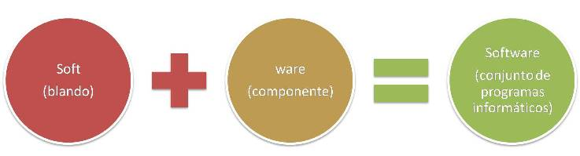 |
Actividad
| Clasificación |
El software se clasifica según su función en:
| Software de sistema.- es el software básico que gestiona el hardware. Son los sistemas operativos, los controladores de los dispositivos, las herramientas de diagnóstico. |
| Software de programación.- son las herramientas que permiten realizar programas, traduciendo las instrucciones a lenguaje máquina. Se denominan compiladores, intérpretes y entornos de desarrollo. |
| Software de aplicación.- son los programas con una función más o menos específica en cualquier campo subceptible de ser controlado informáticamente. Aplicaciones ofimáticas, industriales, ocio y entretenimiento y redes son básicas en todos los campos. |
Sin embargo, en cada uno de estos tres tipos se distinguen el software libre y el de propietario, dependiendo de las licencias y permisos para su uso.
| Software libre es el que otorga libertad de uso, copia y distribución a los usuarios. Su código puede ser totalmente abierto o estar sometido a ciertas normas según la licencia concreta de distribución. |
| Software de propietario es áquel cuyas condiciones de uso, copia y distribución están sometidas a normas o restricciones. Su código fuente es cerrado, es decir, no está disponible para el usuario (el propietario puede mostrarlo, pero esto no implica que pase a ser software libre en cuanto a su uso). |
AV - Actividad de Espacios en Blanco
A diario usamos el ordenador para muchas y variadas tareas. En cada una de ellas usamos aplicaciones realizadas con lenguajes de programación distintos. Las operaciones funcionan bajo sistemas operativos. Incluso en los teléfonos móviles y en los dispositivos como las PDA o los navegadores GPS utilizamos programas. La mayoría, incluso en los ordenadores, están instalados cuando los compramos. Pero, ¿sabes si has pagado por ellos o son gratuitos?
¿Sabrías clasificar estos programas según su licencia y según su función?
Objetivos
1.1 Licencias del software
Actividad
Una licencia de software es un contrato entre el licenciante (autor/titular de los derechos de explotación/distribuidor) y el licenciatario del programa informático (usuario consumidor /usuario profesional o empresa), para utilizar el software cumpliendo una serie de términos y condiciones establecidas dentro de sus cláusulas.
Cuando compramos o bajamos de Internet un programa, al instalarlo solemos aceptar sin leer (mala costumbre) un contrato que especifica el tipo de Licencia de uso del software, en inglés EULA o End User License Agreement: licencia por la cual el uso de un producto sólo está permitido para un único usuario (el comprador). Es un acuerdo unilateral puesto que el usuario no tiene más opción que aceptar o rechazar el contenido del mismo.
<<Este tipo de acuerdo expresa los usos qué se pueden dar y cuáles no al producto, ya que quien lo compra no es, legalmente, en ninguna forma dueño del producto, sino sólo de una licencia para su uso, considerándose esto último por algunas personas como una limitación a los derechos del consumidor.
Las licencias de software pueden establecer entre otras cosas: la cesión de determinados derechos del propietario al usuario final sobre una o varias copias del programa informático, los límites en la responsabilidad por fallos, el plazo de cesión de los derechos, el ámbito geográfico de validez del contrato e incluso pueden establecer determinados compromisos del usuario final hacia el propietario, tales como la no cesión del programa a terceros o la no reinstalación del programa en equipos distintos al que se instaló originalmente.>> Wikipeda Licencia del software
Tipos de Licencias
Software Libre
|
Freeware
|
Software privativo o propietario
|
Shareware
|
|
Dominio público:
|
|
Cada uno de estos tipos de licencias se implementará específicamente, dando lugar a diferentes licencias.
1.2 Se legal - Usa software libre
El uso ilegal de software consiste en copiar o usar software en propiedad sin disponer de la licencia y también en utilizar shareware sin pagarlo después del tiempo de prueba.
Un usuario puede hacer copia de seguridad de sus datos y programas, pero no puede instalar el mismo programa en 2 ordenadores distintos, a no ser que la licencia de distribución se lo permita. Por ello, es muy importante saber qué licencia tienen los programas que usamos.
|
Las grandes compañías persiguen el uso ilegal del software, denominándolo piratería, aunque el término no se ajusta a la realidad ya que no se usurpa la propiedad a nadie.
Es obvio que si se usa y fomenta el software libre, el término piratería ni siquiera es aplicable, y en su lugar hay que hablar de camadería, cooperación, libertad... humanidad, en definitiva.
|
Aunque con el software libre tenemos libertad de uso, modificación y distribuición, es importante conocer la licencia específica del software que estamos usando, ya que cada una tendrá unas características particulares.
En el caso del Proyecto GNU se ha definido la Licencia Pública General GNU _en versión acortada GPL_ que incluye los términos específicos de distribución que se usan para el software así licenciado (disponible en formato HTML, versión en español de la GPL).
Otras licencias específicas de software libre son la Mozilla Public License o la European Union Public License EUPL.
Para saber más
Para conocer en profundidad los tipos de licencias del software libre puede acudirse al siguiente texto de Jesús M. González Barahona:
Introducción al Software libre - Capítulo 3. Aspectos legales
O bien, acceder al término Licencias de software en la wikipedia.
1.3 Conocimiento libre
Importante
Las libertades y derechos de uso respecto al software se han ido expandido al terreno del conocimiento, a la vez que evolucionaba Internet y se extendía su uso.
De esta forma, ha surgido un movimiento que implusa la universalización del saber y el empoderamiento de las personas a través de las tecnologías para el uso, disfrute y construcción del conocimiento en términos de igualdad.
Estándares libres:
Son especificaciones técnicas que ponen a disposición pública su documentación y han sido desarrollados en abierto, y que cualquiera puede usar e implementar libremente, contribuyendo a garantizar los derechos civiles al tiempo que impulsan la innovación. Por ej. especificaciones de protocolos de comunicación, lenguajes de programación, sistemas de codificación,...
Documentación libre:
Se refiere a todos los contenidos que deben acompañar al software para su explotación: manuales, hojas de estilo, fuentes tipográficas, plantillas, multimedia,...
Cultura libre:
Engloba todas las áreas del saber, música, literatura, cine,... Defiende el derecho ciudadano de acceso y uso a la cultura, sin restricciones. Han impulsado el desarrollo del término Copyleft.
Pre-conocimiento
Seguro que has oído muchas veces la palabra Copyright y conoces su significado.
Pero, ¿cuántas veces has oído la palabra Copyleft?

Copyleft |
Copyright |
| Imágenes de Dominio Público en Wikimedia commons | |
Si quieres saber más consulta, por ejemplo, wikipedia.
Derechos de autor
El derecho de autor es un conjunto de normas y principios que regulan los derechos morales y patrimoniales que la ley concede a los autores por el solo hecho de la creación de una obra literaria, artística, científica o didáctica, esté publicada o inédita.
- En el derecho anglosajón se utiliza la noción de copyright (traducido literalmente como "derecho de copia") que -por lo general- comprende sólo la parte patrimonial de los derechos de autor.
- Utilizamos el concepto de coypleft como oposición al copyright tradicional y por tanto, como alternativa a las restricciones que imponen las normas planteadas en los derechos de autor, a la hora de hacer, modificar y distribuir copias de una obra determinada.
- Por otro lado, decimos que una obra pasa al dominio público cuando los derechos patrimoniales han expirado. Esto sucede habitualmente trascurrido un plazo desde la muerte del autor (post mortem auctoris). Por ejemplo, en el derecho europeo, 70 años desde la muerte del autor. Dicha obra entonces puede ser utilizada en forma libre, respetando los derechos morales.
El copyleft se implementa a través de licencias específicas que siguen la legislación, algunos ejemplos son Creative Commons, Colorius, etc.
Por ser las más extendidas internacionalmente, vamos a profundizar en las licencias Creative Commons o CC que están inspiradas en la licencia GPL (General Public License) de GNU. No son, sin embargo, un tipo de licenciamiento de software. La idea principal es posibilitar un modelo legal ayudado por herramientas informáticas, para así facilitar la distribución y el uso de contenidos.
Sé Creativo - Creative Commons
2. Software libre
Software Libre para una Sociedad más libre
|
El software libre es aquel software que viene con autorización para que cualquiera pueda usarlo, copiarlo y distribuirlo libremente. Las copias pueden ser literales o con modificaciones, gratis o mediante una gratificación al autor. En particular, esto significa que el código fuente del programa debe estar disponible.
Puesto que el software libre permite el libre uso, modificación y redistribución, a menudo encuentra un hogar en los países del tercer mundo para los cuales el coste del software propietario es a veces prohibitivo. También es sencillo modificarlo localmente, lo que permite que sean posibles los esfuerzos de traducción a idiomas que no son necesariamente rentables comercialmente. Esto implica que el software libre se considere un bien público en lugar de un bien privado. Un ejemplo de software libre es el sistema operativo Guadalinex. Puedes descargarte gratuitamente e instalar en tu ordenador tanto la versión ciudadana como la educativa: |
2.1 Los orígenes
Primeros pasos
|
El software libre como concepto no apareció hasta principios de la década de 1980. Sin embargo, su historia puede trazarse hasta bastantes años antes:
Hasta
finales de los años sesenta el software era libre.
|
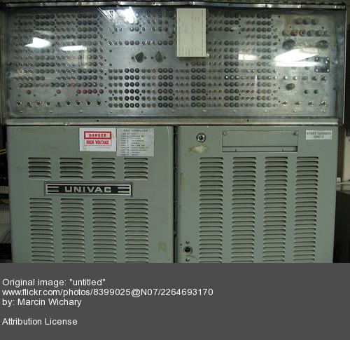 |
A mediados de los años 70 el software
empieza a comercializarse.
|
Años 80
Surge el Movimiento GNU |
|
El proyecto GNU permitió generar varios componentes de un sistema operativo como intérpretes de comandos, blibliotecas y compiladores. Sin embargo, todavía faltaba el núcleo que lo convirtiese en un verdadero sistema operativo. |
|
|
Hacker del emblemático Laboratorio de Inteligencia Artificial de Massachussets (MIT) |
Años 90
Surge Linux |
|
En 1.991 el finlandés Linus Torvalds comienza a programar en Helsinki el núcleo o kernel de Linux a partir de un sistema simplificado del sistema UNIX llamado MIMIX. De ahí el nombre del nuevo sistema operativo. Linus pretendía crear un sistema operativo libre que trabajase en un PC y pudiese utilizar todos los programas con los que trabajaba en la universidad. La idea original de Linus Torvalds unía 3 factores claves = Internet + PC + Movimiento GNU
|
|
| La verdadera innovación del sistema GNU/Linux no reside solo en su dimensión tecnológica, sino en los mecanismos sociales de producción de la innovación que se ponen en juego alrededor suyo. | |
Para saber más
Puedes conocer en detalle la historia del software libre en el siguiente texto de Jesús Gonzalez Barahona:
Introducción al software libre. Capítulo 2. Un poco de historia.
En este enlace puedes leer la biografía de Linus Torvalds: la-flecha-linus-torvalds
2.2 Características
Cumple las Libertades definidas por el movimiento GNU |
|
0. Libertad de usar el programa, con cualquier propósito.
Estas libertades, en particular la 1 y la 3, obligan a que el código fuente esté disponible para el usuario:
TUNEA TU SOFTWARE |
AV - Pregunta Verdadero-Falso
Retroalimentación
Falso
El concepto software libre engloba los conceptos de libertad de uso, copia y distribución.Retroalimentación
Verdadero
Para que el programa pueda ser modificado el código fuente debe estar a disposición de los usuarios.Retroalimentación
Falso
El proyecto GNU es anterior a Linux bajo la licencia GPL (licencia pública).Pre-conocimiento
En muchos casos se oye hablar de open source software (software de código abierto) frente a software libre.
| El término de Open Source lo acuñó Eric S. Raymond para evitar la típica confusión en inglés de la palabra free (tanto libertad como gratis). | |
| La principal diferencia entre los términos "open source" y "free software" es que éste último tiene en cuenta los aspectos éticos y filosóficos de la libertad, mientras que el "open source" se basa únicamente en los aspectos técnicos. |
Actividad de Investigación
Esta pregunta se la hacen cientos de personas que no creen que eso sea posible.
- Investiga y busca posibles formas de vivir del software libre.
2.3 Comunidad
Importante
El Software Libre se caracteriza por estar respaldado por una comunidad de usuarios, conectados a través de Internet a lo largo y ancho del mundo, y que basan sus relaciones en la cooperación.
La gran ventaja de utilizar software libre es, por tanto, su continua evolución, puesto que multitud de equipos de programadores, traductores,... trabajan mejorando los diferentes proyectos.
Siguiendo nuestro símil entre el lenguaje y el cuerpo humano, sería adecuado decir que el lenguaje no pertenece a nadie, cualquiera puede usarlo y adaptarlo a sus necesidades (jergas, tecnicismos). Asimismo, el lenguaje evoluciona por sí sólo, se renueva continuamente. En esta filosofía se basa el diseño del software libre: colaboradores más o menos anónimos y organizados mejoran y adaptan las versiones de un programa, poniendo el resultado a disposición de toda la comunidad.
El movimiento del software libre hace especial énfasis en los aspectos morales o éticos del software, por ello la comunidad siempre está dispuesta a ayudar.
Cuando quieras instalar Guadalinex o un programa libre y te surjan dudas, sólo debes acercarte a los foros de www.guadalinex.org o a cualquier otra página dedicada al mundo de Linux, y allí dejar tu pregunta; seguro que en nada de tiempo te responderán otros usuarios más avanzados.
Tú también puedes colaborar con esta comunidad libre y divertida.
¡¡ Apúntate a la comunidad !!
Cómo puedes colaborar:
- Ayudando a los que saben menos, echando una mano en la inslación o enseñando algún truco,...
- Difundiendo las ventajas del software libre.
- Buscando manuales o software.
- Programando.
- Traduciendo otros programas.
- Documentando.
- Probando código y detectando fallos -bugs-
3. Sistemas Operativos
Actividad
| 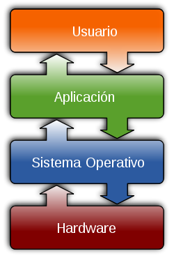 |
Ya has podido comprobar que un ordenador no es un conjunto de dispositivos electrónicos conectados entre sí. Hacen falta las instrucciones para que dichos dispositivos sean controlados por el usuario. El principal de estos programas es el sistema operativo, en calidad de intermediario entre el usuario y la máquina. La mayoría de aparatos electrónicos que utilizan microprocesadores para funcionar disponen de un sistema operativo. (teléfonos móviles, reproductores de DVD, computadoras, radios, etc.). |
| Obra derivada bajo CC de wikipedia |
| Funciones básicas |
Los sistemas operativos deben cumplir unas funciones básicas:
- Gestionar los recursos del hardware, asignando prioridades y usos a las memorias, los periféricos, el disco duro.
- Servir de interfaz entre el usuario y la computadora. Es un traductor que se dirige al usuario en un lenguaje más o menos comprensible (bien mediante comandos, menús o interfaces gráficas) y a la computadora en lenguaje máquina.
- Gestionar la información en forma de archivos que contienen los datos. (No olvides que el fin de la informática es el tratamiento automático de la información).
- Gestionar las tareas en ejecución, asignando tiempos y prioridades mediante interrupciones en el trabajo de la CPU.
- Proporcionar seguridad en la gestión de recursos, de información y de usuarios (en redes o sesiones multiusuario).
- Ser capaz de actualizarse, diagnosticar y resolver problemas, reconocer y habilitar periféricos, permitir a los distintos programas su ejecución.
| Evolución |
La evolución de los sistemas operativos ha estado marcada por su forma de gestionar los datos (primero se procesaban por lotes o paquetes y después se aumentó la velocidad gracias a la aparición de los discos duros), por el número de usarios (mono o multiusuario), por su capacidad de ejecutar varias tareas (multitarea) y por su apariencia y forma de comunicación con el usuario (primero mediante comandos y después mediante interfaz gráfica en forma de ventanas).
AV - Pregunta de Selección Múltiple
Solución
Solución
Solución
Objetivos
El futuro de los Sistemas Operativos, igual que el de las TIC, pasa por ofrecer al usuario facilidad de uso, versatilidad y un mundo de posibilidades.
Los sistemas operativos de los que venimos hablando en este tema son los de escritorio, dedicados a equipos personales, PC o Macintosh. Sin embargo, existen otras tipos de sistemas operativos que se vienen desarrollando a raíz de la evolución de las telecomunicaciones. Podemos distinguir, sistemas operativos de red, sistemas operativos web o en la nube y sistemas operativos para móviles.
En este artículo se da una visión general de este tema: la-guerra-sistemas-operativos-móviles
3.1. Sistema de archivos
Actividad
| 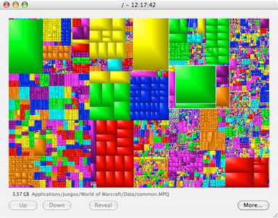 |
|
Aplicación GrandPerspective obtenida en nosolomac.com bajo licencia CC |
La mayoría de los sistemas operativos manejan su propio sistema de archivos. En la siguiente tabla se muestra un resumen de los principales sistemas de archivos:
| FAT32.- Tabla de asignación de archivos (File Allocation Table) de 32 bits. | Es un sistema antiguo, utilizado inicialmente por MS-DOS y después por las primeras versiones de Windows, hasta el XP. Realmente es una mejora del FAT y del FAT16 que usa direcciones de clústers de 32 bits. Se usa en dispositivos de almacenamiento porque tanto Windows como GNU/Linux pueden leer y escribir en este sistema. |
|
exFAT.- Tabla de asignación de archivos extendida (Extended File Allocation Table) |
Este sistema elimina la limitación de FAT32 de 4 GB. Se suele escoger para dispositivos de almacenamiento externo de más de 4 GB ya que permitiría que se puedan almacenar ficheros de más de 4 GB. No cuenta con funciones de seguridad por lo que su uso de limita a memorias de almacenamiento externas. |
| NTFS.- Sistema de archivos de nueva tecnología (New Technology File System). | Es un sistema diseñado para Windows que sustituye al FAT32. Su característica es que permite definir el tamaño del clúster desde 512 bytes independientemente del tamaño de la partición. Sin embargo, no es compatible con GNU/Linux. |
| HFS.- Sistema de archivos jerárquico (Hierarquical File System). | Es un sistema diseñado para Mac Os, mejorado por una versión posterior HFS+ (versión extendida) para MAC OS X. Usa direcciones de clústers de 16 bits y tiene algunos problemas cuando se trabaja en multitarea. Es incompatible con Windows y con casi todas las versiones de GNU/Linux. |
| EXT4.- Cuarto sistema de archivos extendido (Fourth Extended File System). | Es el sistema utilizado por GNU/Linux que mejora a los anteriores EXT2 y EXT3. Es un sistema muy seguro, cuya principal característica es el registro diario (journaling). Trabaja con ficheros de gran tamaño, aumentando así la velocidad. |
| Unidades de disco |
Cada Sistema Operativo utiliza un sistema para denominar las distintas particiones y unidades de disco.
- Windows denomina a las unidades de disco con letras, comenzando por la C, que es la partición primaria en la que está instalado el SO. A partir de ésta, se nombran las demás con letras sucesivas (D, E, ...). Después se nombran el resto de unidades de almacenamiento como unidades de CD o DVD, memorias USB, tarjetas de memoria.
- GNU/Linux "monta" las unidades en el directorio /dev. Las particiones primarias se denominan hd ó sd + letra identificativa del disco + número de partición (por ejemplo: hda1). Las unidades de CD y DVD se denominan hdc y hdd.
AV - Pregunta Verdadero-Falso
Retroalimentación
Falso
La unidad principal será C: y el lector de DVD será D:Retroalimentación
Verdadero
Las anteriores corresponderán al núcleo o kernel del SO y a la partición SWAP (este término lo entenderás en los siguientes apartados).Retroalimentación
Falso
Sólo lo lee Windows y es incompatible con GNU/Linux.Retroalimentación
Verdadero
Cuando trabajamos con dos SO distintos nos interesa tener archivos en FAT32 para leerlos desde ambos.
| Rutas de acceso |
- Directorio raíz, unidad de almacenamiento o denominación de la partición.
- Separadores que indican los directorios y subdirectorios desde el principal hasta los secundarios.
- Denominación del archivo y extensión. Separados por un punto.
AV - Actividad de Espacios en Blanco
3.2. La batalla de los sistemas operativos
|
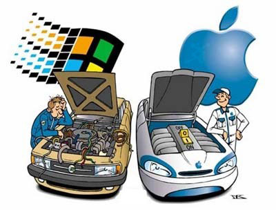
|
|
Img . Windows vs Mac Imagen obtenida en espaciopets.com Licencia Creative Commons |
Actividad de Lectura
Desde sus inicios, Windows se ha visto envuelto en polémicas. Al principio se decía que Windows era una copia del sistema operativo de Apple; más adelante se hablaba de si existía competencia desleal con algunos programas que se incluían dentro del sistema. Una de las principales críticas que con frecuencia recibe el sistema operativo Windows es la debilidad del sistema en lo que a seguridad se refiere.
En este artículo encontrarás una comparativa de los tres grandes titanes. Por supuesto, el autor se declara seguidor de uno de ellos desde el principio, pero esto no influye en el resultado:
Evolución de los sistemas operativos
Para una comparativa de linux y windows en profundidad, véase este enlace.
Rellena la siguiente tabla con pros y contras de cada Sistema Operativo:
 |
 |
|
| GNU/Linux | ||
| Windows | ||
| Mac OS |
Objetivos
Los dos grandes fabricantes del mercado son las empresas Microsoft con Windows y Apple con Mac OS. Frente a ellos el sistema GNU/Linux en sus diferentes versiones.
No obstante, el mercado de los ordenadores personales ha supuesto la diferencia. En este campo el líder es Windows, que acapara el 89 % con sus diferentes versiones.
La "guerra" por acaparar el mercado ha sido dura y, en ocasiones no del todo limpia. En la tabla siguiente se muestra un gráfico sobre la distribución del mercado de los sistemas operativos.
|
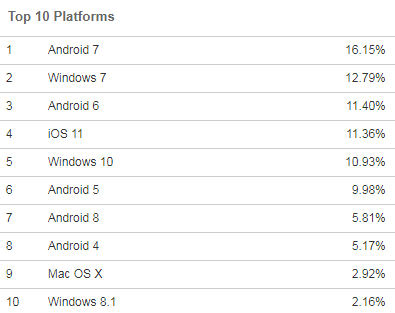
|
|
Distribución de usuarios de sistemas operativos.
Datos de julio de 2018 de la empresa W3Counter
|
Si haces una encuesta en tu entorno sobre que sistema operativo usan tus conocidos, seguro que el número de usuarios de GNU/Linux y de MAC OS es mínimo; pero también notarás que en los últimos tiempos están aumentando considerablemente los usuarios de sistemas operativos móviles (android, blackBerry, etc).
¿Es hora de comenzar a preguntarse por qué? Encontrarás la respuesta en los siguientes apartados del tema.
3.3. Sistemas operativos móviles
Importante
Un sistema operativo móvil es un sistema operativo que controla un dispositivo móvil (teléfonos móviles, smartphone, tablets, etc). Son bastante más simples que los sistemas operativos de escritorio y suelen estar orientados a la multimedia y la conectividad inalámbrica.
Los sistemas operativos móviles más extendidos en la actualidad son Android, iOS y Windows Phone.
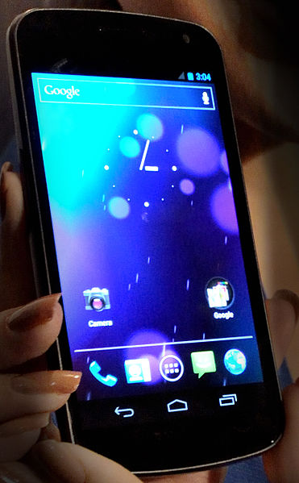
Imagen disponible bajo licencia Creative Commons Reconocimiento 2.5 Genérica
Android es la apuesta de Google para la telefonía móvil, una forma de estar permanentemente conectado a Internet.
Gracias a este sistema operativo, en el teléfono móvil (u otro dispositivo) vienen preinstaladas unas aplicaciones que permiten acceder a los servicios de Google de forma sencilla; además, la aplicación Play Store permite instalar una cantidad ingente de aplicaciones desarrolladas por terceros, extendiendo la experiencia del usuario casi hasta el infinito.
Lo que hace diferente a Android es que está basado en Linux, sistema operativo libre, gratuito y multiplataforma. Ni para usar el sistema en un teléfono, ni para programarlo hay que pagar nada; esto lo hace muy popular entre fabricantes y desarrolladores.
En este enlace podéis conocer algunas de las ventajas de usar un sistema operativo Android en vuestro móvil:
4. Estructura de los Sistemas Operativos
En esta sección veremos los componentes de un sistema operativo, los servicios que él brinda y sus posibles estructuras.
4.1. Componentes de un Sistema Operativo
Administración de Procesos
Para comenzar debemos saber que es un proceso. Un proceso es un programa en memoria + CPU + acceso a dispositivos + otros recursos. Notemos que un proceso necesita de ciertos recursos (como CPU, memoria, archivos, dispositivos de E/S, etc.) para realizar su tarea.
Podemos ver entonces que un proceso es una entidad activa, mientras que un programa una entidad pasiva.
Sabiendo entonces que es un proceso, podemos decir entonces que el sistema operativo es el encargado de su administración. Es el encargado de proveer servicios para que cada proceso pueda realizar su tarea. Entre los servicios se encuentran:
-
Crear y destruir procesos
-
Suspender y reanudar procesos
-
Proveer mecanismos para la sincronización y comunicación entre procesos
-
Proveer mecanismos para prevenir dead-locks o lograr salir de ellos.
Administración de Memoria
La memoria es un área de almacenamiento común a los procesadores y dispositivos, donde se almacenan programas, datos, etc. El sistema deberá administrar el lugar libre y ocupado, y será el encargado de las siguientes tareas:
-
Mantener que partes de la memoria están siendo usadas, y por quien.
-
Decidir cuales procesos serán cargados a memoria cuando exista espacio de
memoria disponible, pero no suficiente para todos los procesos que deseamos.
-
Asignar y quitar espacio de memoria según sea necesario.
Subsistema de Entrada/Salida
El sistema operativo deberá ocultar las características específicas de cada dispositivo y ofrecer servicios comunes a todos. Estos servicios serán, entre otros:
-
Montaje y desmontaje de dispositivos
-
Una interfaz entre el cliente y el sistema operativo para los device drivers.
-
Técnicas de cache, buffering y spooling.
-
Device drivers específicos
Administración de Almacenamiento secundario
Dado que la memoria RAM es volátil y pequeña para todos los datos y programas que se precisan guardar, se utilizan discos para guardar la mayoría de la información. El sistema operativo será el responsable de:
-
Administrar el espacio libre
-
Asignar la información a un determinado lugar
-
Algoritmos de planificación de disco (estos algoritmos deciden quien utiliza un
determinado recurso del disco cuando hay competencia por él)
Subsistema de Archivos
Proporciona una vista uniforme de todas las formas de almacenamiento, implementando el concepto de archivo como una colección de bytes. El Sistema Operativo deberá proveer métodos para:
-
Abrir, cerrar y crear archivos
-
Leer y escribir archivos
Sistema de protección
Antes que nada, tener en cuenta que por protección nos referimos a los mecanismos por los que se controla el acceso de los procesos a los recursos.
En un sistema multiusuario donde se ejecutan procesos de forma concurrente se deben tomar medidas que garanticen la ausencia de interferencia entre ellos. Estas medidas deben incorporar la posibilidad de definir reglas de acceso, entre otras cosas.
4.2. Servicios del Sistema Operativo
El sistema brindará un entorno de ejecución de programas donde se dispondrá de un conjunto de servicios. Los servicios principales serán:
-
Ejecución de programas (el SO deberá ser capaz de cargar un programa a memoria y ejecutarlo. El programa deberá poder finalizar, de forma normal o anormal)
-
Operaciones de E/S (el SO deberá proveer un mecanismo de acceso ya que por eficiencia y protección los usuarios no accederán directamente al dispositivo)
-
Manipulación del Sistema de archivos (se deberá tener acceso al sistema de archivos y poder, como mínimo, leer, escribir, borrar y crear)
-
Comunicación entre procesos (los procesos deberán poder comunicarse, ya sea que estén en el mismo computador o el diferentes)
-
Manipulación de errores (el sistema deberá tomar decisiones adecuadas ante eventuales errores que ocurran, como fallo de un dispositivo de memoria, fallo en un programa, etc.)
4.3. Estructura del Sistema
La estructura interna de los sistemas operativos pueden ser muy diferentes, ya que se debe tener en cuenta las metas de los usuarios (fácil uso, confiable, rápido, etc.) y las del sistema (fácil de diseñar, implementar y mantener, eficiente, etc.).
Veremos 3 posibles diseños del sistema.
- Sistema Monolítico
Estos sistemas no tienen una estructura definida, sino que son escritos como una
colección de procedimientos donde cualquier procedimiento puede invocar a otro.
Ejemplos de estos sistemas pueden ser MS-DOS o Linux (aunque incluye algo de capas). Es importante tener en cuenta que ningún sistema es puramente de un tipo.
- Sistema en capas
El diseño se organiza en una jerarquía de capas, donde los servicios que brinda una capa son consumidos solamente por la capa superior. La capa 0 es del Hardware y la N es la de los procesos de Usuario.
Estos sistemas tienen como ventaja que son modulares y la verificación se puede hacer a cada capa por separado (son más mantenibles). Sin embargo el diseño es muy costoso y es menos eficiente que el sistema monolítico ya que pierde tiempo pasando por cada capa.
- Sistema con micronúcleo
La idea consiste en tener un núcleo que brinde los servicios mínimos de manejo de procesos, memoria y que provea la comunicación entre procesos. Todos los restantes servicios se construyen como procesos separados del micronúcleo, que ejecutan en modo usuario.
Estos sistemas tienen como ventaja un diseño simple y funcional, que aumenta la portabilidad y la escalabilidad. Para agregar un nuevo servicio no es necesario modificar el nucleo, y es más seguro ya que los servicios corren en modo usuario.
5. Sistemas operativos libres. Distribuciones GNU/LINUX
Actividad
|
Se denominan distribuciones GNU/Linux a los sistemas operativos basados en el núcleo Linux que incluyen determinados paquetes de software con aplicaciones para usos específicos, dando así origen a ediciones domésticas, educativas, empresariales y para servidores. Se suelen abreviar con el término distro. |
 |
| En la siguiente imagen podemos ver una composición entre el logotipo del núcleo Linux (el pingüino Tux) y el de la licencia GNU. |
GNU/Linux Imagen de Duduf para Wikimedia Commons |
Las distribuciones más extendidas son las que aparecen en la siguiente tabla (imágenes obtenidas en linux-es.org bajo licencia CC):
| Debian |
|
OpenSuSe |
RedHat | |
Gentoo |
|
|
| Ubuntu |
|
Kubuntu | Fedora |
|
Mandriva |
Estas distribuciones se pueden bajar de Internet, o en algún caso se pueden comprar los CDs de las mismas (normalmente al precio del propio CD más los cargos de envío).
De estas distribuciones (especialmente de Debian y Ubuntu) derivan otras; por ejemplo, cada comunidad autónoma ha venido desarrollando en los últimos años su propia distribución GNU/Linux. En Andalucía, ha adoptado el nombre de Guadalinex.
La distribución contendrá todo lo necesario para instalar un sistema Linux totalmente completo mediante un sencillo programa de instalación que nos ayudará en la tarea.
AV - Pregunta Verdadero-Falso
Retroalimentación
Verdadero
Linux es sólo el núcleo del sistema operativo. Los paquetes de software que incluye dependerán de la demanda de los usuarios.Retroalimentación
Falso
Las distintas versiones y adaptaciones del sistema operativo se denominan distribuciones.Retroalimentación
Falso
Es un sistema operativo libre y totalmente gratuito desarrollado por la Junta de Andalucía.Objetivos
El proyecto Debian es la distribución que más destaca, puesto que mantiene intacta la filosofía de difundir y promover el uso de software libre, lejos de cualquier interés comercial. Está compuesto por una comunidad de desarrolladores voluntarios, regidos por el contrato social, y dispone del mayor catálogo de software libre del mercado.
El competidor que la sigue más de cerca es Ubuntu, aunque su código fuente es el del proyecto Debian.
El resto de distribuciones, aunque siguen manteniendo el carácter de software libre, están respaldadas por empresas como Novell o BSD.
En está página encontrarás una pequeña descripción de las principales distribuciones de GNU/Linux:
Distribuciones-GNU/Linux
5.1. Características
|
Multitarea.- es la capacidad de ejecutar varios programas al mismo tiempo. Todos los sistemas operativos actuales son multitarea, la diferencia es que GNU/Linux asegura que todos los programas que se están utilizando serán ejecutados, siendo el Sistema Operativo el que determina el tiempo que el microprocesador dedica a cada uno. Además sólo lee los ejecutables de un programa que se están usando en ese momento. |
|
Multiusuario.- es la capacidad de funcionar con varias sesiones de usuario a la vez. Permite el uso de 64 consolas virtuales al mismo tiempo. |
|
Multiplataforma.- funciona en la mayoria de las plataformas y con distintos microprocesadores disponibles en el mercado. |
|
Gestión de la memoria.- esta es la característica fundamental, puesto que su filosofía se aleja de la de Windows. GNU/Linux protege la memoria para que un pograma no pueda bloquear el sistema.
Sólo carga partes de los programas que se están ejecutando mediante un sistema de memoria virtual por páginas (4 kb de memoria por página) que se pueden mover a otra zona de memoria si otro programa lo necesita. Así, se aumenta la velocidad.
Por otra parte, usa la memoria como un recurso unificado para los programas y el caché de disco. Cuando un programa se está ejecutando el resto de memoria se usa como caché. |
|
Gestión de archivos.- la estructura de árbol de los archivos es clásica, diferenciándose en que todas las unidades cuelgan de un directorio raíz o root o, simplemente, /. De este cuelgan los demás elementos: unidades (que se montan como un directorio más), programas e información del usuario.
En cuanto a los nombres de los ficheros tiene la peculiaridad de admitir nombres de hasta 256 caracteres con puntos. Por tanto, no tienen extensiones, tal y como las conocemos en Windows. |
|
Seguridad.- GNU/Linux no tiene virus. El objetivo de un virus es atacar software para causar un perjuicio al usuario o al productor de dicho software. Sin embargo, GNU/Linux pertenece a la comunidad, cualquier intento de dañar el sistema será subsanado inmediatamente por la comunidad de desarrolladores. |
|
Redes e internet.- su constante evolución, indenpendiente de empresas privadas, hace que las utilidades de GNU/Linux como sistema operativo de redes sean mucho más potentes y que la mayoría de las supercomputadoras usen este sistema operativo. La razón por la cual se usa también para las aplicaciones relacionadas con internet es su alto grado de seguridad, no puede ser infectado a través de la red con virus maliciosos. |
AV - Actividad de Espacios en Blanco
5.2. Instalación y configuración
Importante
Para utilizar un sistema operativo GNU/Linux tienes varias posibilidades:
- Utilizar una distribución Live (también llamada en vivo): sin instalar nada en tu equipo.
- Hacer una partición del disco duro e instalarlo compartiendo espacio con tu sistema operativo actual.
- Hacer una copia de seguridad de tus archivos, formatear tu ordenador y partir de cero, instalando únicamente la distribución GNU/Linux.
Como el usuario de a pie o el estudiante, como Chip o como tú, generalmente buscan comodidad y seguridad, los sistemas GNU/Linux ofrecen la posibilidad de trabajar sin necesidad de instalar nada en tu ordenador, es la distribución Live. Cuando ya hayas comprobado que todo funciona correctamente puedes pasar a instalar el sistema operativo en tu equipo, bien compartiendo espacio con otro sistema, o dejando en exclusividad la distribución Linux que hayas escogido.
| Instalar una distribución Live |
|
Una distribución Live-CD o Live-DVD es una versión de GNU/Linux que funciona sin necesidad de instalarla en el ordenador. Suelen ser distribuciones de demostración para atraer a usuarios al concepto de software libre y de GNU/Linux. Para ello cuentan con un reconocimiento de hardware bastante avanzado que nos simplificará el trabajo y una opción de instalar el nuevo Sistema Operativo en el disco duro cuando hayamos comprobado que todo funciona correctamente. |
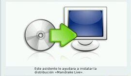 |
| Estas distribuciones se descargan de Internet como imágenes de tipo ISO y deben ser grabados en un CD, DVD o llavero USB, según sea el caso: - CD o DVD: es lo más habitual y consiste en grabar la imagen ISO en un disco DVD y arrancar el ordenador con este disco. Para ello el ordenador debe disponer de grabador de DVD para grabar la imagen en el disco correspondiente y, posteriormente arrancar desde este dispositivo para que se ejecute automáticamente la distribución GNU/Linux (ídem para un CD). - Llavero USB: si el equipo no dispone de DVD, existe la posibilidad de volcar la imagen correspondiente a un pendrive o llavero USB, únicamente es necesario disponer de un pendrive lo suficientemente grande y un programa capaz de volcar la imagen a la memoria USB. Es necesario que nuestro ordenador tenga la posibilidad de arrancar desde dispositivos USB. |
Instalación de Live-CD Imagen de producción propia |
En la instalación de un sistema operativo, suele ser necesario entrar en la BIOS del ordenador para poner el orden de arranque como nos interesa, primero el CD, DVD o USB, y después el disco duro.
| 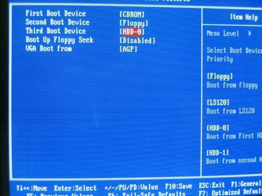 |
En la siguiente imagen puedes observar la pantalla de la BIOS. Observa la secuencia de arranque y compárala con la de tu equipo.
No olvides salir sin realizar ningún cambio si todavía no ha llegado el momento de instalar un nuevo sistema operativo. |
|
Imagen. Pantallazo de la BIOS - Imagen de producción propia |
Por tanto, el primer paso será configurar el equipo para que arranque desde la unidad en la que esté el nuevo Sistema operativo:
Pulsando una combinación de teclas (normalmente SUPR o F2) en la pantalla de arranque del ordenador, se entra en el espacio de la memoria BIOS anterior a la carga del Sistema Operativo. En esta pantalla es posible cambiar la secuencia de arranque del sistema.
En la comunidad de usuarios de software libre siempre encontrarás ayuda para resolver posibles problemas con el arranque desde el disco Live.
AV - Reflexión
Sólo se aprende a caminar, caminando. Por ello, te proponemos que te descargues una distribución Live en DVD o Pen de Guadalinex Edu 2013 como primera toma de contacto con un sistema operativo libre.
Si tu disponibilidad de tiempo es escasa, no te preocupes. En la tarea tendrás que usar la distribución desarrollada por tu comunidad autónoma. En este enlace puedes encontrar los sabores de Guadalinex:
Objetivos
| Instalación en una partición del disco duro |
Este sistema es el adoptado por un gran número de usuarios principiantes que quieren iniciarse en el uso de GNU/Linux. Consiste en crear una partición del disco duro, es decir hacer una división virtual de tu disco duro en dos o más partes del tamaño que elijas. En cada partición se puede instalar un sistema operativo distinto.
|
Esta tarea es sencilla, pero requiere de cierta precaución para no perder los datos del primer sistema operativo instalado. Si ya tenemos Windows, en nuestro ordenador, el primer paso será hacer un scandisk y una defragmentación del disco duro para organizar la información contenida en él. Después, habrá que arrancar con el disco de la distribución GNU/Linux elegida. Actualmente los sistemas linux tiene una interfaz amigable que te permiten escoger el tipo de instalación. En el caso de Guadalinex Edu, una vez que has seleccionado en el instalador la opción Instalar Guadalinex te aparecerá una ventana con diferentes opciones de instalación donde es posible instalar Guadalinex borrando todo lo que hubiera instalada previamente o ajustar las particiones para poder tener instalar Guadalinex en una nueva partición. |
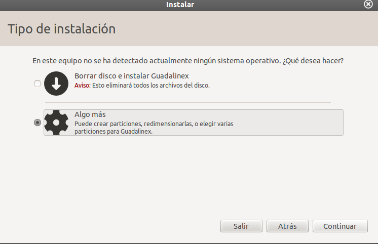 |
|
Proceso de instalación de Guadalinex Edu 2013. Imagen de elaboración propia |
Actividad
|
Las particiones que se crean cuando instalamos un sistema operativo GNU/Linux son:
El resto del espacio del disco duro estará ocupado por:
|
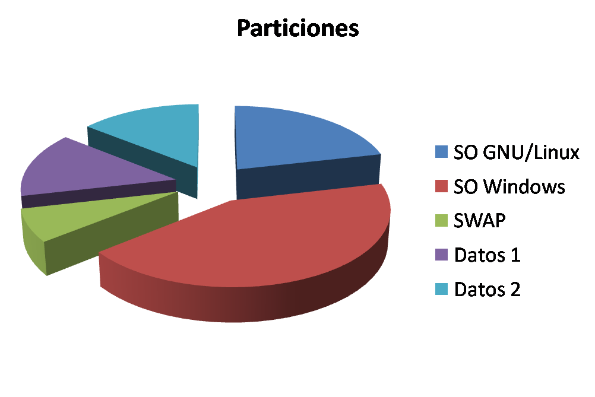 |
|
Reparto de espacio en un disco particionado Imagen de producción propia |
Objetivos
particionar-el-disco-duro-para-linux
| Migración completa a un sistema operativo GNU/Linux |
Cuando lleves un tiempo trabajando con GNU/Linux puede que quieras hacer una migración completa, abandonar tu antiguo sistema operativo y dejar sólo y exclusivamente un sistema operativo totalmente libre en tu equipo.
La instalación completa de un sistema operativo GNU/Linux, a día de hoy, es muy sencilla y amigable.
En el proceso de instalación de Guadalinex, el sistema muestra "Tipo de instalación",
Si estás totalmente seguro y has hecho previamente copia de seguridad de tus datos, tienes que marcar la casilla de verificación de la opción Borrar disco e instalar Guadalinex.
El proceso de instalación formateará todo tu disco duro, instalando el nuevo sistema operativo desde cero.
Curiosidad
AV - Reflexión
| 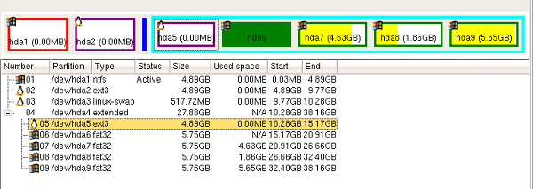 |
|
Imagen capturada con el programa qtparted Imagen de producción propia |
5.3. Herramientas y aplicaciones
A estas alturas del tema, ya conoces las características de los sistemas operativos de software libre. En este apartado estudiarás las principales herramientas de un sistema operativo GNU/Linux, sus carpetas (sistema de archivos), su apariencia (interfaz gráfica) y las aplicaciones más comunes.
En tu propio equipo, al instalar Guadalinex Edu o usar el DVD live, puedes encontrar un extenso manual sobre Guadalinex. También dispones de manuales de Guadalinex en la web:
Imagen extraída del portal del CGA de la Junta de Andalucía
| Estructura de archivos |
El primer paso es conocer la estructura de los archivos para poder situar o buscar cada archivo o programa rápidamente. Todos los archivos "cuelgan" del directorio raíz, representado por una barra: /
Los sistemas GNU/Linux disponen de un usuario administrador (llamado root) que podrá gestionar todas las carpetas y archivos, y otros usuarios que sólo pueden manejar los archivos de su propia carpeta personal /home.
Las carpetas generales de cualquier distribución GNU/Linux son las siguientes:
|
|
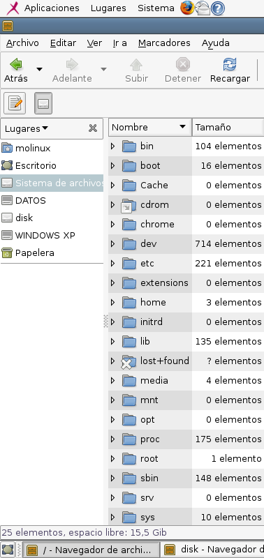 |
|
Pantallazo del sistema de archivos de una distribución GNU/Linux
Imagen de producción propia
|
En la siguiente imagen puedes observar los dispositivos (unidades físicas) conectados al sistema y que están montados en la carpeta /media.
En esta carpeta puedes observar las unidades físicas: discos duros externos, unidades de CD y DVD, memorias USB, en carpetas en principio vacías.
Observa que hay conectado un pen-drive denominado disk y que la partición primaria se denomina sda1.
| 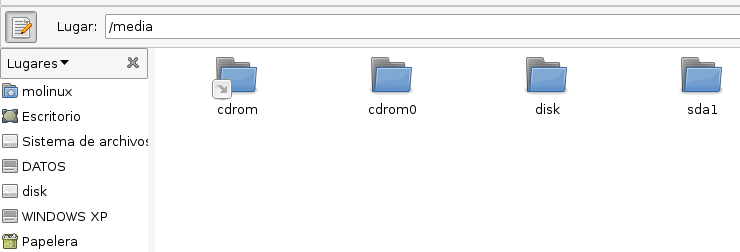 |
|
Pantallazo de la carpeta /media Imagen de producción propia |
| Interfaz gráfica: X-Window |
GNU/Linux estaba diseñada para trabajar en modo consola o intérprete de comandos. Esto quiere decir que inicialmente se trabajaba como en MS-DOS, en modo texto.
Pero la llegada al mundo de los ordenadores personales de forma masiva puso de manifiesto la necesidad de trabajar de forma intuitiva y con pocos conocimientos de programación. De igual forma que Windows y Mac OS, se lanzó la aplicación X-Free ó X-Window ó interfaz gráfica. Ésta permite trabajar con menús, iconos y botones.
|
En el escritorio de Guadalinex, en el menú se encuentra: LUGARES Es posible acceder a distintos lugares en el disco duro y navegar por los directorios típicos de Guadalinex. APLICACIONES Permite navegar por las aplicaciones más importantes: Accesorios: en este apartado, es posible encontrar las aplicaciones accesorias, como la calculadora. Educación: se encuentran todas las aplicaciones más importantes para la educación, para las distintas áreas. Gráficos: es posible encontrar las aplicaciones relacionadas con el diseño gráfico, como el Blender. Internet: se encuentran todas las aplicaciones relacionadas con Internet, como los distintos navegadores. Oficina: es posible encontrar las aplicaciones más habituales de oficina, como el Adobe Acrobar Reader o los programas de LibreOffice. Programación: Contiene los programas más específicos relacionados con la programación. Sonido y Vídeo: Es posible encontrar aplicaciones para la edicicón de audio y vídeo como el Audacity. Wine: en este apartado, es posible encontrar aplicaciones de Windows. Se consegue a través de la emulación de Windows que trae Guadalinex.
|
|
Por supuesto, en el escritorio encontramos iconos de acceso a ciertas aplicaciones y un fondo de escritorio bastante atractivo. |
Actividad
Al modo de trabajo que permite trabajar con una interfaz gráfica en un Sistema Operativo basado en GNU/Linux se le denomina escritorio.
Los dos tipos de escritorios más conocidos son GNOME y KDE.
| 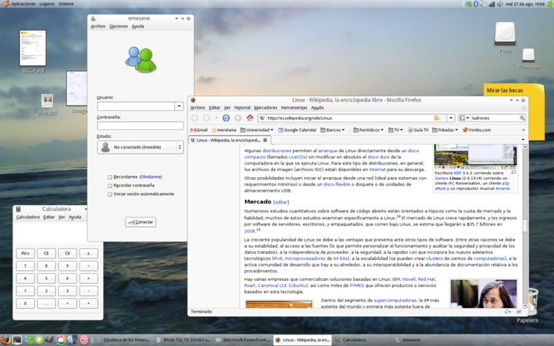 |
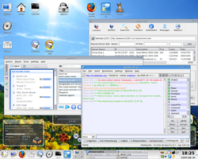 |
|
Imagen del escritorio GNOME de Ubuntu Bajo licencia Creative Commons |
Imagen del escritorio KDE de Gentoo Bajo licencia Creative Commons |
Objetivos
Puedes encontrar una comparativa entre ambos escritorios en esta dirección:
escritorios-linux
Hay un tercer escritorio XFCE, totalmente configurable con el ratón.
AV - Reflexión
Utilizando tu DVD-live de Guadalinex Edu, realiza las siguientes tareas para familiarizarte con el nuevo sistema operativo:
a) Entra en la página web de Guadalinex e investiga si el escritorio está basado en GNOME o en KDE. ¿O quizás en algún otro?
b) ¿Qué versión incluye de paquete ofimático?
c) Cambia el fondo del escritorio.
| Herramienta de gestión de archivos: navegadores |
La aplicación que permite gestionar los archivos en las distribuciones GNU/Linux se denomina navegador. En Guadalinex (y en cualquier otra distribución basada en Ubuntu), usando el escritorio GNOME, el navegador es Nautilus.
En las distribuciones que usan el escritorio KDE el navegador es Konqueror.
No debemos confundir el navegador de archivos (o gestor de archivos) con el navegador web, que puede ser
Mozilla, por ejemplo. Haciendo una analogía con Windows, el gestor de
archivos sería el Explorador y el navegador web Internet Explorer.
Nautilus se activa haciendo click en Lugares y muestra una barra lateral izquierda con carpetas y una pantalla central con la vista que elijamos: iconos o lista con detalles (tamaño, tipo, fecha de modificación).
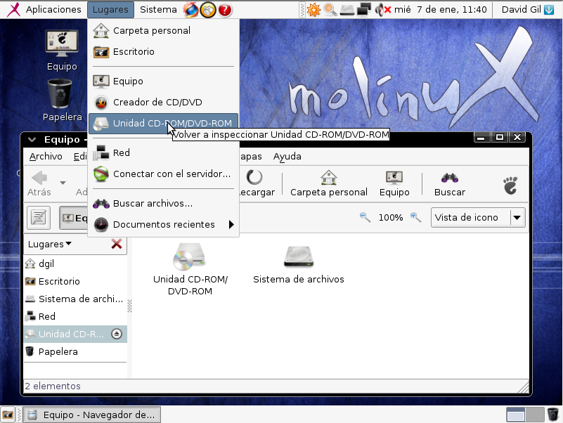 |
|
Pantallazo de Nautilus en el sistema operativo libre Molinux. Imagen de producción propia |
| Aplicaciones |
Las aplicaciones más comunes que incluyen todas las distribuciones de GNU/Linux son:
- Paquete de ofimática: OpenOffice. Incluye editor de textos, hoja de cálculo, creador de presentaciones, gestor de bases de datos y programa de gráficos vectoriales.
- Aplicación de manipulación imágenes.
- Navegador web.
- Grabador de CD/DVD.
- Lector de correo electrónico.
- Reproductor de música.
Actividad
Los sistemas operativos GNU/Linux te permiten añadir de manera sencilla nuevas aplicaciones a tu equipo.
En el software libre las programas y aplicaciones se distribuyen en forma de paquetes, para impedir que la instalación de un programa afecte al funcionamiento de otro.
En este enlace, podrás consultar el repositorio completo de paquetes de Guadalinex y cómo instalar o desinstalar fácilmente cualquier aplicación de Guadalinex:
AV - Actividad de Espacios en Blanco
Curiosidad
Cuando una nueva versión de un paquete específico de software libre se pone a disposición de los usuarios su nomenclatura nos indicará si es una versión estable o si todavía está en desarrollo. Este sistema asegura que cuando una nueva versión tiene fallos rápidamente es corregido por otros desarrolladores. Por ello siempre se destaca de GNU/Linux su alta fiabilidad y su flexibilidad para adaptarse a nuevos requerimientos.
5.4. Uso educativo e institucional
Actividad de Lectura
Te proponemos que este apartado lo termines tú, buscando las distribuciones de cada comunidad autónoma y, si eres un poco atrevido, en qué distribución genérica se basan.
Presta mucha atención, la tarea la tendrás que realizar en la distribución de tu comunidad autónoma.
| Andalucía | Tenerife |
Madrid |
| Aragón |
Cantabria |
Melilla |
| Asturias | Castilla-La Mancha |
País Vasco |
| Canarias | Galicia |
Valencia |
 Distribuciones GNU/Linux de las instituciones españolas
Distribuciones GNU/Linux de las instituciones españolas
En esta imagen encontrarás sus iconos y su distribución por la geografía española.
Imagen de Wikimedia Commons. Autor: Keikon. Licencia CC.
Pre-conocimiento
¿Sabías que existe un proyecto mundial cuyo objetivo es dar a cada niño un pequeño ordenador portátil?
Este proyecto se denomina "One laptop per child" (OLPC), "Un portátil por niño". Es una iniciativa respaldada por el MIT (Instituto Tecnológico de Massachusetts y por empresas como Google y AMD.
Adivina qué sistema operativo ha sido el elegido para instalar en estos equipos. Seguro que has acertado, no podía se otro que GNU/Linux.
Infórmate en su página web: OLPC
6. Sistemas operativos propietarios
Importante
El software de propietario es aquel que tiene limitados los derechos de uso, copia, distribución o modificación. Su código fuente no está disponible, aún cuando esté abierto al usuario. Los derechos de autor pertenecen a una persona o a una empresa.
En muchos casos el sistema operativo viene preinstalado de fábrica, compramos un equipo PC o portátil con el sistema operativo incluido; puede parecer que no pagamos por él, sin embargo su precio se incluye en el precio total del equipo.
| 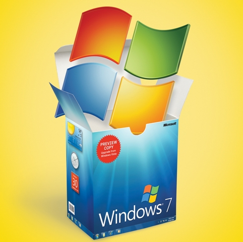 |  |
|
Logos de los sistemas operativos propietarios más extendidos en el mercado.
Nuestro protagonsita, Chip, ha intentado encontrar la forma de explicar que es el software propietario, manteniendo su símil con el lenguaje. Pero esta vez sólo ha podido relacionarlo con el coste de un buen material para aprender un idioma. |
|
Pre-conocimiento
En clave de humor Windows versus Mac
Te proponemos los siguientes vídeos publicados en youtube comparando Windows y MAC OS. No pretendemos hacer publicidad ni inclinar la balanza de uno u otro lado. Pero el humor está presente en todos los aspectos de la vida, los Sistemas Operativos no son la excepción.
No obstante, en cada uno de ellos se habla de una característica técnica. Identíficala y asóciala con lo estudiado en los apartados anteriores.
|
|
|
|
|
|
6.1. Windows
Actividad
|
Windows es un Sistema Operativo propiedad de la empresa Microsoft, de software no libre o de propietario. Utiliza un sistema de archivos NTFS y es compatible con FAT32 y es multitarea y multiusuario. |
En el siguiente vídeo se muestran la mayoría de los logotipos de este sistema operativo. Seguro que reconoces unos cuantos. |
| Un poco de historia |
- La historia comienza en 1.981 con el lanzamiento del sistema operativo MS-DOS de la empresa Microsoft para el IBM PC. En principio un sistema que sólo utilizaba comandos textuales.
- En 1.985, se lanza un nuevo sistema operativo denominado Windows que incluye una interfaz gráfica de usuario (GUI en inglés). Un sistema de marcos que se abren y cierran en la pantalla facilitan bastante el trabajo del usuario: éstas son las ventanas. Sin embargo, las primeras versiones eran siempre más limitadas que las de su competidor directo Apple Macintosh. Su culminación fue la versión Windows 3.11.
- Su rápida evolución, con versiones continuas que incluyen cada vez más mejoras y más aplicaciones, y su compatibilidad con los microprocesadores Intel, lo convierten en el sistema operativo por excelencia para los PC. En 1995 se lanza Windows 95 con el reinado absoluto en el mercado.
- Windows 98 supone otra innovación, con el uso de un sistema de archivos de 32 bits, FAT32. Windows NT como sistema operativo de redes y más tarde Windows Server. Windows 2000 con la tecnología Plug&Play. Son las versiones más destacables en la llamada Edad Media de los sistemas operativos.
- La llegada de Windows XP vuelve a acercarlo al sistema operativo de Apple, mejorando el trabajo con archivos multimedia. Paralelamente se lanzan versiones para móviles, PDA, tablet PC y otros dispositivos portátiles.
- Windows 7 es una versión comercializada de Microsoft en Octubre de 2009. Su licencia es propietaria, Microsoft CLUF (EULA). Por su estabilidad y buen rendimiento, esta versión de Windows todavía es posible encontrarla instalada en alguna computadora.
- Windows 8. Esta versión de Windows se puso a disposición de los usuarios en Agosto de 2012. La gran polémica que tuvo esta versión de Windows fue la desaparación del tan conocido menu de Inicio de Windows. En Octubre de 2013, Microsoft implementó una actualización gratuido de esta versión: Windows 8.1.
- Windows 10. Este es sistema operativo más moderno de Microsoft. Se puso a disposición de los usuarios en Julio de 2015.
| Configuración: el panel de control |
El Sistema Operativo Windows se instala en la unidad de disco duro, denominada como C:\ en la carpeta Windows. Las actualizaciones se instalan en carpetas fácilmente identificables y el resto de aplicaciones en la carpeta Archivos de Programa.
Si ya eres usuario de Windows no necesitas un curso de manejo de ventanas y carpetas. Si eres usuario de GNU/Linux o de MAC OS tampoco necesitas aprender nada nuevo.
El escritorio de Windows es muy conocido y, como seguro que ya sabes, está formado por una zona de iconos (dibujos que abren aplicaciones, carpetas o archivos) y una barra de Inicio.
En el menú Inicio se despliega una lista con los todos los programas instalados, los más recientemente usados, el menú de búsqueda y el acceso al panel de control. También encontramos los botones para cerrar el sistema correctamente o cambiar de usuario.
| 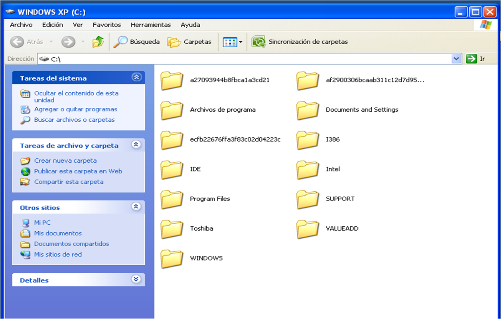 |
|
Carpetas de Windows
Imagen de producción propia
|
Pero el menú fundamental para configurar tanto el Sistema Operativo como los dispositivos y periféricos es el Panel de control. En él encontramos iconos que permiten la configuración del teclado, del ratón, la instalación de nuevos programas, de nuevo periféricos, la configuración de fecha y hora y el administrador de dispositivos.
AV - Reflexión
A partir de esta imagen del panel de control, indica qué icono utilizarías para realizar las tareas que se proponen.
| 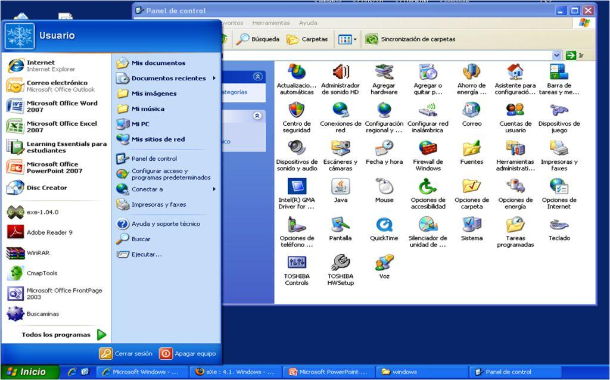 |
||
|
Panel de control de Windows XP Imagen de producción propia |
||
- Activar el Firewall.
- Cambiar lo botones del ratón.
- Instalar un nuevo programa.
- Instalar un nuevo componente de Windows.
- Configurar el acceso a internet.
- Instalar una nueva impresora.
- Cambiar el fondo de escritorio de la pantalla.
AV - Actividad de Espacios en Blanco
¿Recuerdas la actividad que has realizado en el apartado de software libre para averiguar los nombres de las aplicaciones incluidas en el paquete Openoffice?
Microsoft ha creado su propio paquete ofimático: Microsoft Office. En él se incluyen aplicaciones semejantes a las de Openoffice. Su principal y nada despreciable diferencia es que no va incluido en el Sistema Operativo y hay que comprarlo aparte.
Te proponemos que relaciones los nombres de sus aplicaciones.
6.2. MAC OS
Actividad
|
Mac OS es un Sistema Operativo (del inglés Macintosh Operating System) propiedad de la empresa Apple Inc., para su línea de computadoras Macintosh (Mac). Este sistema operativo es de software no libre o de propietario, aunque algunos de sus componentes de bajo nivel son de código abierto y software libre. Utiliza un sistema de archivos HFS+. |
|
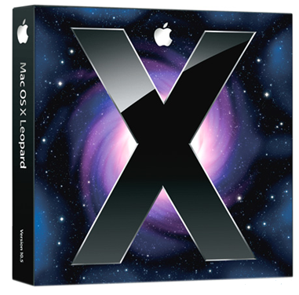
|
|
Logotipo de Apple Inc. Todos los derechos resevados |
Logotipo de Apple Inc. Todos los derechos resevados
|
| Un poco de historia |
- Aunque la historia de la compañía Apple comienza en los años 70, su primer gran éxito fue el lanzamiento en 1.984 del primer ordenador personal (Macintosh 128k) con un Sistema Operativo con interfaz gráfica de usuario (GUI) y manejo mediante el ratón.
- Las nuevas versiones se denominaron System, incluyendo en la versión 5 una aplicación que permitía trabajar con varias aplicaciones a la vez, es decir, en multitarea.
- La siguiente mejora fue la programación en lenguaje C y la aparición del panel de control en la versión System 7. Esta versión incluía la aplicación de reproducción de archivos multimedia QuickTime.
- Mac OS 8 y 9 intentaron mejorar el punto de la compatibilidad con los procesadores Intel y con los archivos de Windows. En 1.999 Microsoft ya dominaba el mercado de los PC.
- Por fin en 1.999, aparece Mac OS X, el Sistema Operativo actual de Apple con una versión Server para redes y después para ordenadores personales. Basado en un núcleo Unix y con una interfaz gráfica denominada Aqua, su última versión se llama High Sierra.
Pre-conocimiento
| 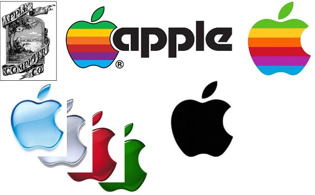 |
|
Logotipos de Apple Inc. Autor Santiago de Lucas para estudiocreativo.net |
| Configuración: el panel de control |
|
La apariencia y la facilidad de uso es importante para todos los creadores de software. Esto se multiplica en un ordenador Mac. Su diseño afecta tanto a la parte externa como a su escritorio.
La similitud con Windows y GNOME de GNU/Linux es grande. Las variantes son las barras o paneles superior e inferior.
En la barra superior se encuentran los iconos mediante los cuales podemos activar el navegador, llamado Finder,
y los menús desplegables similares a Windows. En la parte derecha los
controles de sonido, fecha y hora y buscador, como en GNOME.
En la barra inferior, llamada dock, encontramos las aplicaciones representadas mediante iconos. Se abren con un click y se cierran con un click derecho.
Las ventanas no utilizan el aspa en la esquina superior derecha para
cerrarse. En cada ventana encontramos tres botones imitando un
semáforo: rojo para cerrar, amarillo para minimizar y verde para abrir.
|
|
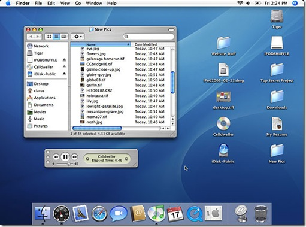
|
||
|
|
Escritorio de Mac OS X
Imagen de producción propia |
|
El panel de control se basa, al igual que Windows, en proporcionar al usuario la posibilidad para tomar decisiones de instalación o configuración de dispositivos, programas y utilidades.
Se denomina preferencias del sistema y en él las utilidades están agrupadas por niveles.
| 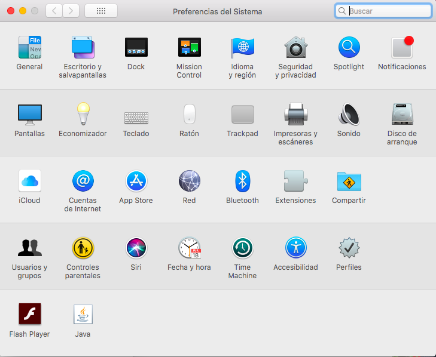 |
|
Panel de preferencias del sistema de Mac OS X Imagen de producción propia |
AV - Reflexión
- Dock.
- Exposé-Spaces.
- Spotlight.
- Time Machine.
| Aplicaciones |
Las característica inicial de los equipos Mac era la rapidez y calidad en el trabajo en el campo del diseño y con archivos multimedia. Aunque los equipos que trabajan con sistemas operativos Windows o GNU/Linux han llegado a alcanzar en sus tarjetas gráficas cualidades similares, los reyes del mercado de diseño siguen siendo los Mac.
Pero, el gran inconveniente es la incompatibilidad con los otros sistemas. Esta ha sido la gran batalla de Apple, mejorar las aplicaciones para dar respuesta a todo tipo de usuarios. Estas son las que incluye la última versión Mac OS X High Sierra.
| Mozilla Firefox | Navegador web. |
| Quick Time | Reporductor de archivos multimedia. |
| iMovie | Programa de edición de vídeo. |
| iPhoto | Editor y organizador de fotografías. |
| Programa de correo eléctronico que combate el spam. |
AV - Actividad de Espacios en Blanco
Objetivos
Los ordenadores Macintosh tradicionalmente estaban basados en un procesador PowerPC y una tarjeta gráfica específica; en el año 2006 Apple inició la transición desde la línea de PowerPC a los procesadores Intel con arquitectura x86, lo que está facilitando la compatibilidad con otros sistemas. Los Mac actuales, son capaces de soportar sistemas operativos como Linux y Windows.
Por otro lado, el sistema Mac OS también ha sido exclusivo de los ordenadores Mac; sin embargo hoy en día, existen emuladores del escritorio de Mac OS X para Windows y GNOME.
Si te animas investiga un poquito. En esta web encontrarás una guía fácil de cómo navegar por las ventanas del Mac:
pasate-a-mac
7. Usuarios y recursos

Computadora
Imagen de pixibay. Recuperado de https://pixabay.com/es/computadora-usuario-icono-1331579/
Licencia CC0 Creative Commons. Gratis para usos comerciales. No es necesario reconocimiento.
Actualmente, tiene mucho sentido la creación de usuarios en un sistema informático que lo vayan a utilizar, aunque la computadora estén en una casa. El hecho de tener definidos usuarios, permite la personalización de un ordenador (el escritorio o las aplicaciones que quiere utilizar).
Imagen de pixibay. Recuperado de https://pixabay.com/es/mano-comercial-b%C3%BAsqueda-p%C3%A1gina-web-3108158/
Licencia CC0 Creative Commons. Gratis para usos comerciales. No es necesario reconocimiento.
De la misma manera, es muy difícil encontrar hoy en día un sistema informático aislado, sin conexión al alguna red. Este tipo de usos quedan reducidos a aplicaciones muy específicas en el que no es necesario la conexión a una red o se deja el sistema informático aislado por cuestiones de seguridad.
Una red de ordenadores pone a disposición de sus usuarios unos recursos. La existencia de estos recursos hace necesario que se monitoricen para comprobar que funcionan correctamente. También es necesario que un usuario de una red sea capaz tanto de hacer uso de los recursos así como de la puesta en funcionamiento de algunos de ellos, como es el caso de una impresora en red compartida por un ordenador para que el resto de usuarios puedan utilizarla.
7.1. Usuarios, grupos y dominios
El éxito de los ordenadores ha venido de la mano de los sistemas distribuidos. Esto quiere decir que la potencia real de un ordenador está asociada a su pertenencia a una red donde el conjunto de tareas se divide y cada computadora se encarga de realizar una parte. Se puede definir una red como un todo compuesta por una serie de recursos. Estos recursos pueden ser de almacenamiento (sistema de ficheros), de impresión, etc.
Con la existencia de las redes de ordenadores, por cuestiones de seguridad, es necesario gestionar el acceso a la red. Para ello, es necesario definir usuarios, grupos y dominios. Es necesario distinguir entre sistemas operativos Windows y sistemas operativos basados en Unix / Linux en relación a la gestión de usuarios, grupos y dominios.
WINDOWS
En Windows es necesarios definir una cuenta de usuario para poder acceder a ella. Este tipo de cuentas con cuentas locales de la máquina y, por defecto, vienen definidas algunas como son la cuenta de administrador y la cuenta de invitado. Incluso cuando se define en Windows que no se desea introducir usuario y contraseña para acceder a la computadora, detrás de este proceso hay un usuario y en el que se ha automatizado este acceso.
También es posible definir grupos de trabajo. Un grupo de trabajo está compuesto por una serie de usuarios. Estos usuarios definen qué quieren compartir con el resto de usuarios del grupo. Este tipo de agrupamientos puede funcionar correctamente cuando el número de miembros del grupo no es elevado ya que en caso contrario la administración del grupo se complica.
Cuando el número de usuarios es elevado, lo habitual es tener un dominio. Este dominio tiene asociado una base de datos. En ella, se definen usuarios, recursos y máquinas. A través del servidor de dominio, se pueden definir usuarios y se puede gestionar el uso de los recursos a los que un usuario del dominio puede acceder.
En el siguiente vídeo se explica de forma muy clara la diferencia entre grupos de trabajo y dominios.
Grupo de Trabajo vs Dominio
Vídeo de Vela, S. (2017, Mayo). Recuperado de https://www.youtube.com/watch?v=56Kv1HcsuyQ&t=79s. Licencia de youtube estándar.
Es posible acceder a una computadora que pertenece a una red a través de un usuario local definida en ella o a través de un usuario de dominio. Evidentemente, en aquel caso, la máquina no pertenece al dominio por lo que no tendrá acceso a los recursos del dominio o solo podrá acceder a los recursos locales de la máquina que tenga definido en el momento de la creación. Por ejemplo, un usuario invitado tiene muy limitado los recursos locales a los que tiene acceso por el propio perfil que deben tener este tipo de usuarios.
En el siguiente vídeo, se incide aún más en este concepto.
Diferencias entre usuarios locales y del dominio (usuario local vs dominio)
Vídeo de GabakTech - Cursos de Computación y Tecnología (2013, Diciembre). Recuperado de https://www.youtube.com/watch?v=YzYqd1NcZTA. Licencia de youtube estándar.
UNIX / LINUX
En sistemas operativos Unix / Linux también es posible hacer la definición de usuarios y grupos. Su gestión es diferente a Windows. En el siguiente vídeo se explica brevemente la forma de gestionar usuarios y grupos.
Gestión de usuarios y grupos en GNU/Linux
Vídeo de Pantoja, W. L. (2016, Mayo). Recuperado de https://www.youtube.com/watch?v=78ktBPR7Xvg.Licencia de youtube estándar.
Actividad
Tanto en Windows como en Unix / Linux, es necesario la existencia de usuarios para controlar el acceso a un ordenador o una red de ordenadores.
Una red se puede definir como un todo compuesta por una serie de recursos. Estos recursos pueden ser de almacenamiento (sistema de ficheros), de impresión, etc.
Para acceder a un ordenador se puede hacer de dos maneras:
- Cuentas locales: se accede solo al ordenador y a los recursos de este.
- Cuentas del dominio (globales): se accede a los recursos a los que ese usuario puede acceder en ese dominio.
Un grupo de trabajo está compuesto por una serie de usuarios. Estos usuarios definen qué quieren compartir con el resto de usuarios del grupo.
Cuando el número de usuarios es elevado, lo habitual es tener un dominio. Este dominio tiene asociado una base de datos. En ella, se definen usuarios, recursos y máquinas. A través del servidor de dominio, se pueden definir usuarios y se puede gestionar el uso de los recursos y máquinas a los que un usuario del dominio puede acceder.
7.2. Gestión de dispositivos e impresoras
Un ordenador se define como un sistema que es capaz de realizar muchas operaciones por segundo. Las prestaciones de un ordenador se incrementan con los dispositivos que se le conecten, ya sean de entrada o de salida.
Un usuario debe saber gestionar estos dispositivos, ya sea para añadirlos, eliminarlo e incluso hacer algún tipo de modificación sobre ellos, como puede ser la actualización de un controlador.
Para la conexión de un dispositivo a un sistema informático, es necesario disponer del dispositivo físico en sí, es decir, el hardware. También es necesario un módulo software que haga de traductor o intermediario entre el ordenador al que esté conectado el dispositivo. A este módulo software se le llama controlador o driver.
Actividad
Para poder conectar un periférico a un ordenador, es necesario disponer del controlador para el sistema operativo de la computadora a la que se vaya a conectar.
Por este motivo, si se tiene una computadora muy antigua con un sistema operativo también obsoleto, es posible que no se puede conectar ese periférico a ese ordenador, ya que no existe el controlador para ese sistema operativo tan antiguo.
Es muy importante chequear, antes de comprar un periférico, los requerimientos necesarios para poder usar ese periférico porque puede ser que nuestro ordenador no los cumpla.
En el siguiente vídeo se explica cómo se realiza la gestión de dispositivos e impresoras en Windows.
Donde esta dispositivos e impresoras en Windows 10
Vídeo de IntroduccionRedes (2016, Enero). Recuperado de https://www.youtube.com/watch?v=C_bAhSEleZg. Licencia de youtube estándar.
En Linux, también se puede realizar la gestión de dispositivos e impresoras. En el siguiente enlace, es posible acceder a la guía de usuario de Guadalinex Edu. En el punto 5.3, se explica cómo se realiza la gestión de impresoras y dispositivos, en general.
GUÍA DE USUARIO DE GUADALINEX EDU (apartado 5.3. Gestión de impresoras y dispositivos)
Manual e imagen del portal del CGA de la Junta de Andalucía. Recuperado de http://www.juntadeandalucia.es/educacion/cga/portal
7.3. Recursos: compartición, monitorización y rendimiento
COMPARTIR RECURSOS
Una de las ventajas de disponer de una red es tener la posibilidad de compartir recursos. Por ejemplo, ya no es necesario que todos los usuarios de la red tengan un ordenador con una impresora, sino con conectar la impresora a la red o a uno de los ordenadores de la red, ya sería posible hacer uso de la misma por el resto de los usuarios.
Para ello, es necesario aprender a compartir los recursos de la red. En el siguiente vídeo tienes un tutorial muy interesante que explica cómo realizar la compartición de recursos en una red. Para simplificar, se va a trabajar con la compartición de recursos de un grupo de trabajo. Además, esta es la opción más común a la que se puede enfrentar cualquier usuario con la compartición de recursos en el hogar.
A modo de resumen, los paso a realizar:
1. Creación de un grupo de trabajo.
2. Añadir equipos al grupo de trabajo.
3. Gestionar la compartición de recursos (si es necesario solicitar contraseña, qué se quiere compartir, etc.).
Como Compartir Archivos en Red con Windows 10
Vídeo de Owicron (2016, Agosto). Recuperado de https://www.youtube.com/watch?v=vFdY29wim9w.Licencia de youtube estándar.
MONITORIZACIÓN Y RENDIMIENTO
La existencia de una red o un equipo informático con una serie de recursos, hace que sea necesario poder monitizarlos para conseguir que la infraestructura que se ha montado funcione de una forma óptima. Este monitorización es diferente dependiendo del tipo de red, ya que no es lo mismo una red de una empresa en la que es muy importante que tenga un funcionamiento eficiente o la red de casa, en la que si no es posible acceder al equipo que está en la planta de abajo no es tan importante.
En una red de una compañía, la monitorización de red se suele hacer con aplicaciones específicas aunque un sistema operativo suele contener funcionalidades que permiten esta monitorización.
A modo de ejemplo, en el panel de control de los servidores de Windows es posible realizar la monitorización de recursos y eventos, para chequear que el funcionamiento del equipo es correcto y poder actuar en caso contrario.
En el siguiente vídeo, se muestra cómo es posible realizar esta monitorización en un servidor de Windows.
Herramientas para Monitorización en Windows Server 2012 R2
Vídeo de JGAITPro (2014, Diciembre). Recuperado de https://www.youtube.com/watch?v=GEZmUSFCJm0. Licencia de youtube estándar.
La monitorización de recursos y de eventos es posible hacerlo no solo en un servidor sino que también cualquier ordenador personal dispone de funcionalidades para poder visualizar los eventos más importantes del sistema así como la monitorización de recursos.
La forma de acceder a esta funcionalidad es muy sencilla. Solo tienes que poner en el buscador "Monitor de recursos" o "Monitor de rendimiento" y aparecerá una ventana con la que es posible analizar el funcionamiento del equipo. En el siguiente vídeo, se tiene una explicación de las distintas pestañas.
Como hacer monitoreo de CPU
Vídeo de howtechesp (2013, Mayo). Recuperado de https://www.youtube.com/watch?v=T3JhjC8N_L8. Licencia de youtube estándar.
Actividad
La clave de una red de ordenadores es la existencia de una serie de recursos disponibles para los usuarios de la red. La gestión de la compartición de recursos es importante, en la medida en la que se controla el acceso de los usuarios a todos los recursos de la red. Por cuestiones de seguridad, se debe controlar qué usuario puede acceder a qué recurso. Para ello, existen los perfiles de usuarios así como la pertenencia de los usuarios a un determinado grupo, con la que es posible facilitar esta labor de control al administrador de la red y establecer políticas de seguridad.
Dentro de las tareas de administrador, está la supervisión y mantenimiento de la red ya que se debe asegurar no solo que los recursos están disponibles sino que el funcionamiento de los mismos es óptimo. Es importante chequear los eventos que ocurren en las distintas máquinas que conforman la red, es importante realizar las tareas de mantenimiento que cada recurso necesita para lograr el funcionamiento de la red sea correcto. No hay que olvidar que un disco duro se puede estropear o un equipo puede ser infectado por un virus, por lo que el administrador de la red tiene que establecer las medidas y procedimientos oportunos para que el funcionamiento de una red de nuevo óptimo en el menor tiempo posible.
8. Software de aplicación
Se podría decir que el software es todo aquello que no es hardware, es decir, todo aquello considerado como la parte lógica de sistema que controlando la parte física del ordenador es capaz de realizar determinadas funciones.
Un ordenador se puede dividir en niveles. En el nivel más bajo se encuentra el hardware. Por encima del hardware y liberando al usuario de funciones básicas de control del mismo, está el sistema operativo. Por último, sobre el sistema operativo se instalan los programas o aplicaciones. Por tanto, en esta breve introducción se puede ver que hay distintos tipos de software según el nivel en el que se sitúe.
8.1. Tipos
Clasificaciones de software hay muchas pero la más aceptada es aquella que divide al software en tres grandes tipos:
- Software de sistema.
- Software de programación.
- Software de aplicación.
El software de sistema es aquel encargado de controlar directamente al hardware. Libera al usuario de realizar estas operaciones de bajo nivel y le proporciona un interfaz de nivel superior para que este se puede dedicar a tareas más específicas y menos básicas como puede ser el control de la memoria RAM de un ordenador o controlar el número de vueltas que tiene que dar el plato de un disco duro para realizar una operación de lectura o escritura.
A este tipo de software pertenecen los sistemas operativos cuya función principal es controlar el hardware y proporcionar un entorno o interfaz de alto nivel al usuario. Los controladores de los periféricos también entran dentro de este tipo de software, ya que son el intermediario entre el sistema operativo y dispositivo físico conectado a un ordenador. Proporcionan la interfaz por la que un sistema operativo es capaz de controlar un periférico. Dentro los programas que corren en un ordenador, los hay que tienen una función básica de control del hardware y, por tanto, entra dentro del tipo de software de sistema. Un ejemplo de este tipo de programas son los servicios que corren cuando se inicia una sesión en un ordenador, las utilidades que pueden estar instaladas en una computadora para facilitar alguna tarea de mantenimiento o las herramientas de diagnóstico que pueden estar disponibles y venir junto con el sistema operativo o ser instaladas a posteriori, cuya función es la monitorización de los recursos y sucesos de un sistema informático.
El software de programación es aquel que permite al usuario la posibilidad de implementar programas informáticos. Los compiladores, intérpretes, depuradores, enlazadores, etc. son ejemplos de este tipo de software.
El software de aplicación es aquel que está en la parte superior del entorno que se le proporciona a un usuario. Son los programas que se instalan en último lugar y permiten la realización de tareas específicas. Un programa para la gestión de hojas de cálculos puede ser un buen ejemplo de este tipo de software.
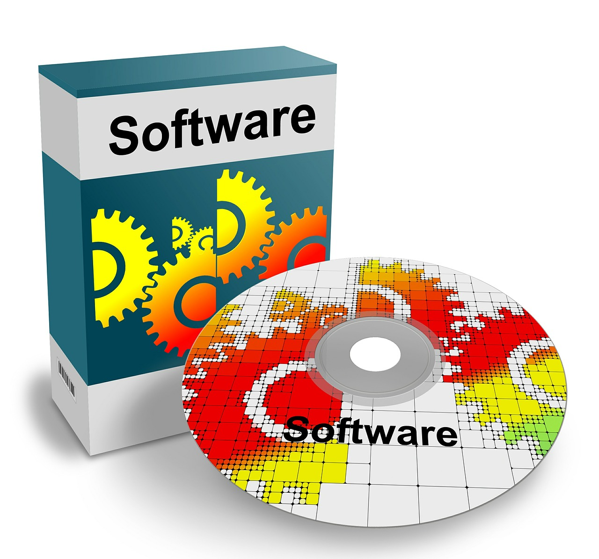
Software
Imagen de pixibay. Recuperado de https://pixabay.com/es/software-cd-dvd-digital-disco-417880/
Licencia CC0 Creative Commons. Gratis para usos comerciales. No es necesario reconocimiento.
Actividad
Los tipos de software que hay son:
- Software de sistema (sistemas operativos, controladores, etc.).
- Software de programación (lenguajes de programación de alto nivel, compiladores, depuradores, etc.).
- Software de aplicación (paquetes ofimáticos, programas educativos ,etc.).
8.2. Clasificación
El software de aplicación se puede clasificar de muchas maneras, tantas como distintas áreas del conocimiento existen. Además, esta clasificación se complica dado que existe software de aplicación muy específico difícil de encuadrar en algún tipo concreto. En cualquier caso, y al igual que se ha hecho con los tipos de software existentes, la clasificación de software de aplicación más frecuente de encontrar es la siguiente:
- Aplicaciones ofimáticas. Estos son los programas más comunes que se pueden encontrar en una oficina y permiten realizar las tareas específicas más habituales para alcanzar los objetivos propuestos. Existen paquetes muy conocidos que se instalan en primer lugar justo después de la instalación del sistema operativo en un ordenador y que agrupan los programas más habituales que forman parte de las aplicación de ofimáticas:
- Procesador de texto. Programa que permite la creación y manipulación de ficheros de texto. Estos ficheros pueden contener objetos de distintas naturalezas, como imágenes, vídeos incrustados, etc.
- Aplicación para la gestión de hojas de cálculos. Estos tipos de programas permiten el análisis y la manipulación de datos mediante hojas de cálculo.
- Aplicación para la creación de presentaciones. Aplicaciones que permiten la presentación de información de una forma resumida y atractiva.
- Aplicación para la gestión de bases de datos. Este tipo de programas suelen venir el paquete de ofimática aunque hay que reconocer que realizan una tarea más específica y su uso no es tan habitual. Mediante estos programas se organiza la información de una forma especial de forma que la realización de búsquedas se realizan de forma óptima.
- Internet. Son aquellas aplicaciones que están relacionadas con Internet. Los navegadores de Internet son un ejemplo de programas que entran dentro de este tipo de programas como Google Chrome, Mozilla Firefox o Internet Explorer. Dentro de este tipo de software podrían entrar también los programas de comunicación a través de Internet, como Skype o Viber o lo gestores de correo electrónico.
- Multimedia. Son todos aquellos programación relacionados con la reproducción y edición de audio y vídeo.
- Software educativo. Las aplicaciones informáticas cobran cada vez más importancia en la educación ya que posibilitan que el aprendizaje se produzca de una manera más eficiente. Por tanto, todos los programas que tienen algún tipo de finalidad educativa entrarían dentro de este tipo. Además, en este tipo de software se puede dividir nuevamente teniendo en cuenta las distintas áreas de conocimiento que hay en el currículo. Ejemplos de este tipo de programas son Arduino (Tecnología), Audacity (Música) o Kgeography (Geografía e Historia).
- Juegos.
- Software de cálculo numérico y simbólico.
- Software de diseño asistido por ordenador (CAD). Este tipo de programas permite explorar ideas y aprovechar las TIC para llevar a cabo estas ideas. El programa más popular y el más usado dentro de este tipo de software es el AutoCAD que permite realizar dibujos técnicos con ayuda de un ordenador. Mediante estos programas, la elaboración de este tipo de dibujos a mano se han reducido casi hasta su desaparición.
- Software de CAM (Computer Aided Manufacturing o Fabricación Asistida por Ordenador). Este tipo de software es el que se utiliza en la industria para hacer que la fabricación de productos se realice de forma óptima, ya sea mediante la automatización de los controles de calidad, la planificación de los procesos, etc.
- Software médico.
- Software empresarial. Este tipo de programas es muy específico y se puede clasificar de distinta manera. Desde una perspectiva funcional, los programas se pueden clasificar en:
- Sistemas de ventas y marketing (p.e. programas para procesamiento de pedidos).
- Sistemas de manufactura y producción (p.e. programas para la planeación de la producción)
- Sistemas financieros y contables (p.e. programas para la elaboración de presupuestos).
- Sistemas de recursos humanos (p.e. programas para la planeación de recursos humanos).
Este tipo de programas se pueden analizar desde la perspectiva de los usuarios de la empresa a los que va dirigido. Así, se pueden considerar los siguientes programas:
- Sistemas de procesamiento de transacciones, para el apoyo de los empleados de nivel de operaciones.
- Sistemas de información gerencial, para el apoyo de la toma de decisiones de los gerencia intermedia.
- Sistemas de apoyo a los ejecutivos, son los programas más específicos dirigidos a la alta dirección.
CLASIFICACIÓN DE SOFTWARE DE APLICACIÓN EN GUADALINEX EDU
En el siguiente vídeo se explica la clasificación del software de aplicación que se hace en Guadalinex Edu.
Vídeo de creación propia
Actividad
Una de las posibles clasificaciones del software de aplicación es la siguiente:
- Aplicaciones ofimáticas.
- Internet.
- Multimedia.
- Software educativo.
- Juegos.
- Software de cálculo numérico y simbólico.
- Software de diseño asistido por ordenador (CAD).
- Software de CAM (Fabricación Asistida por Ordenador).
- Software médico.
- Software empresarial.
8.3. Instalación y uso
Para mostrar la instalación y el uso de aplicaciones en los distintos sistemas operativos, visualiza los siguientes vídeos donde se muestra tanto en Ubuntu (Linux) como en Windows, cómo se instalan aplicaciones y se hace uso de las mismas.
INSTALACIÓN Y USO DE APLICACIONES EN UBUNTU
Vídeo de BuclesUbuntu
INSTALACIÓN Y USO DE APLICACIONES EN WINDOWS
Para ordeandores con sistemas operativos Windows, el proceso es muy similar. En el siguiente vídeo tienes una explicación rápida de la instalación y desinstalación de programas, así como una breve guía de uso de aplicaciones bajo este sistema operatitvo.
Vídeo de creacion propia
Actividad
La instalación de aplicaciones en cualquier sistema operativo es parecida. Como se ha mostrado en los vídeos, la instalación de software de aplicación en Guadalinex Edu es diferente dado que con este sistema operativo se entrega un paquete con las aplicaciones de uso común en un centro educativo. Existe una versión de Guadalinex para el hogar donde sí es posible instalar cualquier aplicaciones para Linux.
La instalación de aplicaciones en ordenadores Apple es parecida a la que se hace un Windows. Los ficheros para la instalación suelen tener extensión .dmg. Este tipo de ficheros son similares a los instalables de Windows. Por tanto, solo hay que ejecutarlos y seguir las instrucciones. En algunos casos, se crea un icono con la aplicación que hay que mover a la carpeta de aplicaciones.
Resumen
El software se clasifica según su función en:
| Software de sistema.- es el software básico que gestiona el hardware. Son los sistemas operativos, los controladores de los dispositivos, las herramientas de diagnóstico. |
| Software de programación.- son las herramientas que permiten realizar programas, traduciendo las instrucciones a lenguaje máquina. Se denominan compiladores, intérpretes y entornos de desarrollo. |
| Software de aplicación.- son los programas con una función más o menos específica en cualquier campo subceptible de ser controlado informáticamente. Aplicaciones ofimáticas, industriales, ocio y entretenimiento y redes son básicas en todos los campos. |
Sin embargo, en cada uno de estos tres tipos se distinguen el software libre y el de propietario, dependiendo de las licencias y permisos para su uso.
| Software libre es el que otorga libertad de uso, copia y distribución a los usuarios. Su código puede ser totalmente abierto o estar sometido a ciertas normas según la licencia concreta de distribución. |
| Software de propietario es áquel cuyas condiciones de uso, copia y distribución están sometidas a normas o restricciones. Su código fuente es cerrado, es decir, no está disponible para el usuario (el propietario puede mostrarlo, pero esto no implica que pase a ser software libre en cuanto a su uso). |
Una licencia de software es un contrato entre el licenciante (autor/titular de los derechos de explotación/distribuidor) y el licenciatario del programa informático (usuario consumidor /usuario profesional o empresa), para utilizar el software cumpliendo una serie de términos y condiciones establecidas dentro de sus cláusulas.
Tipos de Licencias
Software Libre
|
Freeware
|
Software privativo o propietario
|
Shareware
|
|
Dominio público:
|
|
El uso ilegal de software consiste en copiar o usar software en propiedad sin disponer de la licencia y también en utilizar shareware sin pagarlo después del tiempo de prueba.
Un usuario puede hacer copia de seguridad de sus datos y programas, pero no puede instalar el mismo programa en 2 ordenadores distintos, a no ser que la licencia de distribución se lo permita. Por ello, es muy importante saber qué licencia tienen los programas que usamos.
El software libre es aquel software que viene con autorización para que cualquiera pueda usarlo, copiarlo y distribuirlo libremente.
Las copias pueden ser literales o con modificaciones, gratis o mediante una gratificación al autor. En particular, esto significa que el código fuente del programa debe estar disponible.
La mayoría de los sistemas operativos manejan su propio sistema de archivos. En la siguiente tabla se muestra un resumen de los principales sistemas de archivos:
| FAT32.- Tabla de asignación de archivos (File Allocation Table) de 32 bits. | Es un sistema antiguo, utilizado inicialmente por MS-DOS y después por las primeras versiones de Windows, hasta el XP. Realmente es una mejora del FAT y del FAT16 que usa direcciones de clústers de 32 bits. Se usa en dispositivos de almacenamiento porque tanto Windows como GNU/Linux pueden leer y escribir en este sistema. |
|
exFAT.- Tabla de asignación de archivos extendida (Extended File Allocation Table) |
Este sistema elimina la limitación de FAT32 de 4 GB. Se suele escoger para dispositivos de almacenamiento externo de más de 4 GB ya que permitiría que se puedan almacenar ficheros de más de 4 GB. No cuenta con funciones de seguridad por lo que su uso de limita a memorias de almacenamiento externas. |
| NTFS.- Sistema de archivos de nueva tecnología (New Technology File System). | Es un sistema diseñado para Windows que sustituye al FAT32. Su característica es que permite definir el tamaño del clúster desde 512 bytes independientemente del tamaño de la partición. Sin embargo, no es compatible con GNU/Linux. |
| HFS.- Sistema de archivos jerárquico (Hierarquical File System). | Es un sistema diseñado para Mac Os, mejorado por una versión posterior HFS+ (versión extendida) para MAC OS X. Usa direcciones de clústers de 16 bits y tiene algunos problemas cuando se trabaja en multitarea. Es incompatible con Windows y con casi todas las versiones de GNU/Linux. |
| EXT4.- Cuarto sistema de archivos extendido (Fourth Extended File System). | Es el sistema utilizado por GNU/Linux que mejora a los anteriores EXT2 y EXT3. Es un sistema muy seguro, cuya principal característica es el registro diario (journaling). Trabaja con ficheros de gran tamaño, aumentando así la velocidad. |
Un sistema operativo móvil es un sistema operativo que controla un dispositivo móvil (teléfonos móviles, smartphone, tablets, etc). Son bastante más simples que los sistemas operativos de escritorio y suelen estar orientados a la multimedia y la conectividad inalámbrica.
Se denominan distribuciones GNU/Linux a los sistemas operativos basados en el núcleo Linux que incluyen determinados paquetes de software con aplicaciones para usos específicos, dando así origen a ediciones domésticas, educativas, empresariales y para servidores. Se suelen abreviar con el término distro.
|
Multitarea.- es la capacidad de ejecutar varios programas al mismo tiempo. Todos los sistemas operativos actuales son multitarea, la diferencia es que GNU/Linux asegura que todos los programas que se están utilizando serán ejecutados, siendo el Sistema Operativo el que determina el tiempo que el microprocesador dedica a cada uno. Además sólo lee los ejecutables de un programa que se están usando en ese momento. |
|
Multiusuario.- es la capacidad de funcionar con varias sesiones de usuario a la vez. Permite el uso de 64 consolas virtuales al mismo tiempo. |
|
Multiplataforma.- funciona en la mayoria de las plataformas y con distintos microprocesadores disponibles en el mercado. |
|
Gestión de la memoria.- esta es la característica fundamental, puesto que su filosofía se aleja de la de Windows. GNU/Linux protege la memoria para que un pograma no pueda bloquear el sistema.
Sólo carga partes de los programas que se están ejecutando mediante un sistema de memoria virtual por páginas (4 kb de memoria por página) que se pueden mover a otra zona de memoria si otro programa lo necesita. Así, se aumenta la velocidad.
Por otra parte, usa la memoria como un recurso unificado para los programas y el caché de disco. Cuando un programa se está ejecutando el resto de memoria se usa como caché. |
|
Gestión de archivos.- la estructura de árbol de los archivos es clásica, diferenciándose en que todas las unidades cuelgan de un directorio raíz o root o, simplemente, /. De este cuelgan los demás elementos: unidades (que se montan como un directorio más), programas e información del usuario.
En cuanto a los nombres de los ficheros tiene la peculiaridad de admitir nombres de hasta 256 caracteres con puntos. Por tanto, no tienen extensiones, tal y como las conocemos en Windows. |
|
Seguridad.- GNU/Linux no tiene virus. El objetivo de un virus es atacar software para causar un perjuicio al usuario o al productor de dicho software. Sin embargo, GNU/Linux pertenece a la comunidad, cualquier intento de dañar el sistema será subsanado inmediatamente por la comunidad de desarrolladores. |
|
Redes e internet.- su constante evolución, indenpendiente de empresas privadas, hace que las utilidades de GNU/Linux como sistema operativo de redes sean mucho más potentes y que la mayoría de las supercomputadoras usen este sistema operativo. La razón por la cual se usa también para las aplicaciones relacionadas con internet es su alto grado de seguridad, no puede ser infectado a través de la red con virus maliciosos. |
Los sistemas operativos GNU/Linux te permiten añadir de manera sencilla nuevas aplicaciones a tu equipo.
En el software libre las programas y aplicaciones se distribuyen en forma de paquetes, para impedir que la instalación de un programa afecte al funcionamiento de otro.
El software de propietario es aquel que tiene limitados los derechos de uso, copia, distribución o modificación. Su código fuente no está disponible, aún cuando esté abierto al usuario. Los derechos de autor pertenecen a una persona o a una empresa.
En muchos casos el sistema operativo viene preinstalado de fábrica, compramos un equipo PC o portátil con el sistema operativo incluido; puede parecer que no pagamos por él, sin embargo su precio se incluye en el precio total del equipo.
Mac OS es un Sistema Operativo (del inglés Macintosh Operating System) propiedad de la empresa Apple Inc., para su línea de computadoras Macintosh (Mac).
Este sistema operativo es de software no libre o de propietario, aunque algunos de sus componentes de bajo nivel son de código abierto y software libre. Utiliza un sistema de archivos HFS+.
Una red de ordenadores pone a disposición de sus usuarios unos recursos. La existencia de estos recursos hace necesario que se monitoricen para comprobar que funcionan correctamente. También es necesario que un usuario de una red sea capaz tanto de hacer uso de los recursos así como de la puesta en funcionamiento de algunos de ellos, como es el caso de una impresora en red compartida por un ordenador para que el resto de usuarios puedan utilizarla.
Tanto en Windows como en Unix / Linux, es necesario la existencia de usuarios para controlar el acceso a un ordenador o una red de ordenadores.
Una red se puede definir como un todo compuesta por una serie de recursos. Estos recursos pueden ser de almacenamiento (sistema de ficheros), de impresión, etc.
Para acceder a un ordenador se puede hacer de dos maneras:
- Cuentas locales: se accede solo al ordenador y a los recursos de este.
- Cuentas del dominio (globales): se accede a los recursos a los que ese usuario puede acceder en ese dominio.
Un grupo de trabajo está compuesto por una serie de usuarios. Estos usuarios definen qué quieren compartir con el resto de usuarios del grupo.
Cuando el número de usuarios es elevado, lo habitual es tener un dominio. Este dominio tiene asociado una base de datos. En ella, se definen usuarios, recursos y máquinas. A través del servidor de dominio, se pueden definir usuarios y se puede gestionar el uso de los recursos y máquinas a los que un usuario del dominio puede acceder.
Para poder conectar un periférico a un ordenador, es necesario disponer del controlador para el sistema operativo de la computadora a la que se vaya a conectar.
Por este motivo, si se tiene una computadora muy antigua con un sistema operativo también obsoleto, es posible que no se puede conectar ese periférico a ese ordenador, ya que no existe el controlador para ese sistema operativo tan antiguo.
Es muy importante chequear, antes de comprar un periférico, los requerimientos necesarios para poder usar ese periférico porque puede ser que nuestro ordenador no los cumpla.
La clave de una red de ordenadores es la existencia de una serie de recursos disponibles para los usuarios de la red. La gestión de la compartición de recursos es importante, en la medida en la que se controla el acceso de los usuarios a todos los recursos de la red. Por cuestiones de seguridad, se debe controlar qué usuario puede acceder a qué recurso. Para ello, existen los perfiles de usuarios así como la pertenencia de los usuarios a un determinado grupo, con la que es posible facilitar esta labor de control al administrador de la red y establecer políticas de seguridad.
Dentro de las tareas de administrador, está la supervisión y mantenimiento de la red ya que se debe asegurar no solo que los recursos están disponibles sino que el funcionamiento de los mismos es óptimo. Es importante chequear los eventos que ocurren en las distintas máquinas que conforman la red, es importante realizar las tareas de mantenimiento que cada recurso necesita para lograr el funcionamiento de la red sea correcto. No hay que olvidar que un disco duro se puede estropear o un equipo puede ser infectado por un virus, por lo que el administrador de la red tiene que establecer las medidas y procedimientos oportunos para que el funcionamiento de una red de nuevo óptimo en el menor tiempo posible.
Una de las posibles clasificaciones del software de aplicación es la siguiente:
- Aplicaciones ofimáticas.
- Internet.
- Multimedia.
- Software educativo.
- Juegos.
- Software de cálculo numérico y simbólico.
- Software de diseño asistido por ordenador (CAD).
- Software de CAM (Fabricación Asistida por Ordenador).
- Software médico.
- Software empresarial.
La instalación de aplicaciones en cualquier sistema operativo es parecida. Como se ha mostrado en los vídeos, la instalación de software de aplicación en Guadalinex Edu es diferente dado que con este sistema operativo se entrega un paquete con las aplicaciones de uso común en un centro educativo. Existe una versión de Guadalinex para el hogar donde sí es posible instalar cualquier aplicaciones para Linux.
La instalación de aplicaciones en ordenadores Apple es parecida a la que se hace un Windows. Los ficheros para la instalación suelen tener extensión .dmg. Este tipo de ficheros son similares a los instalables de Windows. Por tanto, solo hay que ejecutarlos y seguir las instrucciones. En algunos casos, se crea un icono con la aplicación que hay que mover a la carpeta de aplicaciones.
Aviso Legal
El presente texto (en adelante, el "Aviso Legal") regula el acceso y el uso de los contenidos desde los que se enlaza. La utilización de estos contenidos atribuye la condición de usuario del mismo (en adelante, el "Usuario") e implica la aceptación plena y sin reservas de todas y cada una de las disposiciones incluidas en este Aviso Legal publicado en el momento de acceso al sitio web. Tal y como se explica más adelante, la autoría de estos materiales corresponde a un trabajo de la Comunidad Autónoma Andaluza, Consejería de Educación (en adelante Consejería de Educación).
Con el fin de mejorar las prestaciones de los contenidos ofrecidos, la Consejería de Educación se reserva el derecho, en cualquier momento, de forma unilateral y sin previa notificación al usuario, a modificar, ampliar o suspender temporalmente la presentación, configuración, especificaciones técnicas y servicios del sitio web que da soporte a los contenidos educativos objeto del presente Aviso Legal. En consecuencia, se recomienda al Usuario que lea atentamente el presente Aviso Legal en el momento que acceda al referido sitio web, ya que dicho Aviso puede ser modificado en cualquier momento, de conformidad con lo expuesto anteriormente.
-
- Régimen de Propiedad Intelectual e Industrial sobre los contenidos del sitio web.
- Imagen corporativa. Todas las marcas, logotipos o signos distintivos de cualquier clase, relacionados con la imagen corporativa de la Consejería de Educación que ofrece el contenido, son propiedad de la misma y se distribuyen de forma particular según las especificaciones propias establecidas por la normativa existente al efecto.
- Contenidos de producción propia. En esta obra colectiva (adecuada a lo establecido en el artículo 8 de la Ley de Propiedad Intelectual) los contenidos, tanto textuales como multimedia, la estructura y diseño de los mismos son de autoría propia de la Consejería de Educación que promueve la producción de los mismos.
La Consejería de Educación distribuye todos los elementos, salvo los relacionados con la imagen corporativa, que conforman la presente obra colectiva objeto del presente Aviso Legal bajo una licencia:
Creative Commons Reconocimiento-NoComercial-CompartirIgual 4.0 Internacional
http://creativecommons.org/licenses/by-nc-sa/4.0/Esto implica que usted es libre de:
- Copiar, distribuir y comunicar públicamente la obra.
- Hacer obras derivadas.
- Reconocimiento - Debe reconocer los créditos de la obra de la manera especificada por el autor o el licenciador (pero no de una manera que sugiera que tiene su apoyo o apoyan el uso que hace de su obra).
- No comercial - No esta permitido usar el material con fines comerciales.
- Compartir bajo la misma licencia - Si altera o transforma esta obra, o genera una obra derivada, solo puede distribuir la obra generada bajo una licencia idéntica a esta, es decir, bajo una licencia Creative Commons by- nc - sa.
- Contenidos de terceros. Incluidos en los contenidos se pueden encontrar elementos de terceros. En todo caso, la utilización de recursos de terceros se ha realizado respetando las licencias de distribución que son de aplicación. Si en algún momento existiera en los materiales algún elemento cuya utilización y difusión no estuviera permitida en los términos que aquí se hace, es debido a un error, omisión o cambio en la licencia original. Si el usuario detectara algún elemento en esta situación podría comunicarlo a la Consejería de Educación bajo la que se distribuye el material para que tal circunstancia sea corregida de manera inmediata.
- Régimen de Propiedad Intelectual e Industrial sobre los contenidos del sitio web.
- Exclusión de responsabilidad
La Consejería de Educación pone a su disposición la información más precisa y correcta posible, aplicando los correspondientes procesos de revisión; sin embargo, puede suceder que en algunos casos la información contenida en los materiales sea errónea o no esté completa o actualizada. La Consejería de Educación dispone de un procedimiento para que cualquier usuario pueda informar de alguno de los aspectos mencionados; en aras de la mejora del servicio que se pretende dar con estos materiales, se tienen establecidos los mecanismos necesarios para modificar lo que se haya detectado en cada momento y sea susceptible de mejora o sustitución.
En los materiales también existen elementos y enlaces a páginas web que dependen de sitios externos totalmente independientes y ajenos al control de la Consejería de Educación, por lo tanto, fuera de su responsabilidad. Por ello, las Consejería de Educación no se responsabiliza de los eventuales errores tipográficos, formales o numéricos que puedan contener esos elementos externos, ni de la exactitud de la información contenida en los mismos, ni de la aparición de contenidos no adecuados o publicitarios.
Esos contenidos externos tendrán exclusivamente carácter informativo en ningún caso implican relación alguna entre la Consejería de Educación, Cultura y Deporte Andaluza y las personas o entidades titulares de tales contenidos o titulares de los sitios donde se encuentren.
A pesar de ello, y usando los cauces establecidos en cada caso, se ruega la comunicación de cualquier incidencia de las comentadas, para que pueda ser corregida o eliminada en el menor espacio de tiempo posible.